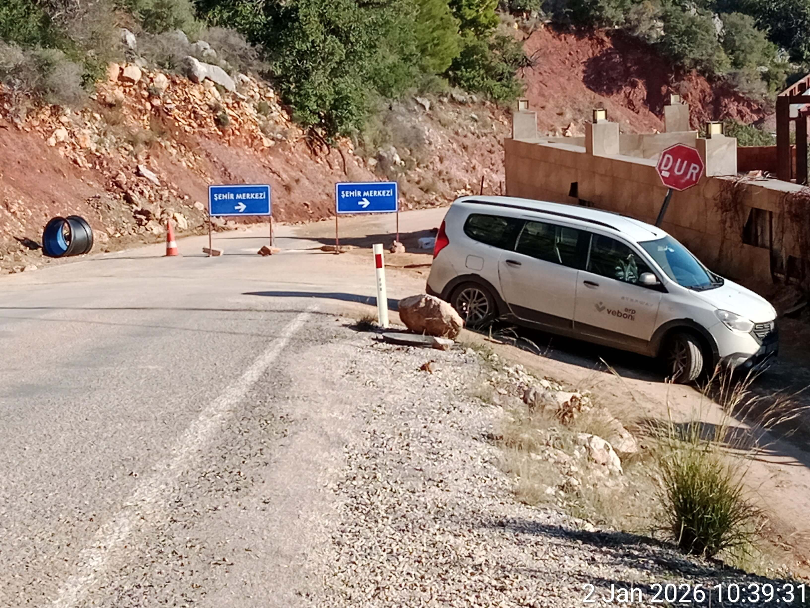
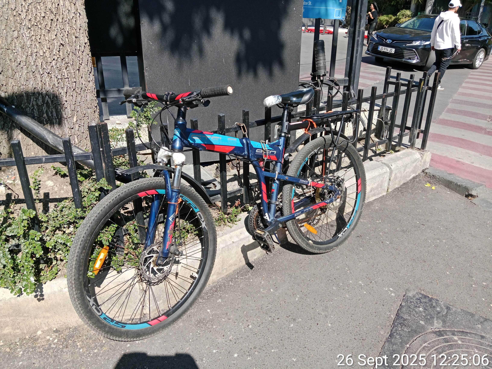
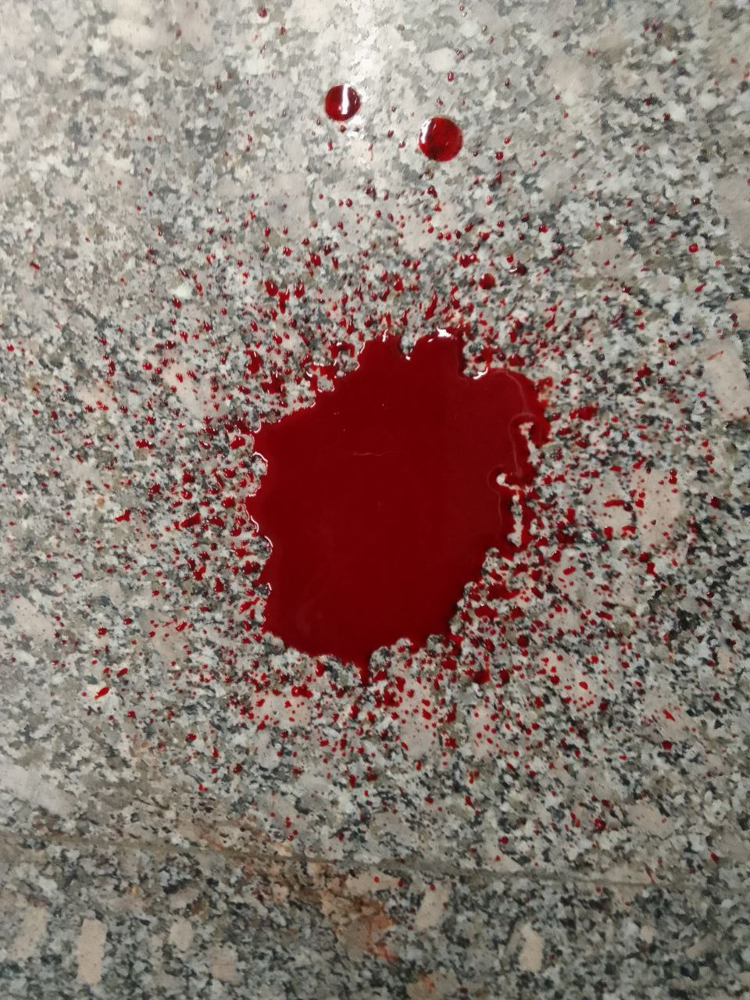

САТИРИЧНІ ПРОТОКОЛИ ПОЛІТИЧНОГО ПЕРЕСЛІДУВАННЯ
Ольга Щеглова (Борис Бидяга)
ВСТУП
«Методичка ФСБ» — це не художній вимисел, не припущення і не умоглядні конструкції.
В основі діалогів Вечирка та Сенька лежить особистий досвід автора, який вже більше десяти років піддається систематичному переслідуванню з боку російських спецслужб. Спочатку — в Росії, а після еміграції — в інших країнах.
«Методичка ФСБ» — це літературна фіксація реальних методик, спрямованих на руйнування особистості та фізичне знищення людини.
ІНСЦЕНУВАННЯ: СМЕРТЕЛЬНА ДОРОЖНЯ АВАРІЯ
Росія, Москва. Затишна квартира в багатоповерховому будинку. Всередині — двоє співробітників російських спецслужб, які вальяжно розвалилися в м'яких кріслах.
СЕНЬКО (весело):
— Ну усе, Вечирку, бабці гаплик. Нарешті ми її загнали в кут.
ВЕЧИРКО (із сумнівом):
— Ми її сто разів заганяли в кут — і що? Жива-здорова, ганяє на своєму довбаному велосипеді. Стара на колесах.
СЕНЬКО (отруйно усміхаючись):
— Велосипед якраз і зведе її в могилу.
ВЕЧИРКО:
— Знову гальма? Ну то у Грузії наші хлопці їй сто разів гальма виводили з ладу — вона їх лагодить.
СЕНЬКО:
— Ні, Вечирку, ти не тямиш. У Грузії вона не мала таких крутих узвозів, як зараз. У Грузії вона могла зупинитися — тут ні. Щойно вона виїжджає зі свого майданчика на шосе — одразу починається дико крутий спуск. Без гальм її понесе зі швидкістю лавини. Півтора кілометра вниз. Головне — щоб вона сіла і поїхала.
ВЕЧИРКО:
— Ну і як ти її змусиш — «сіла й поїхала»? Може, вона їх знову полагодить!
СЕНЬКО:
— Уся краса в тому, що після крамниці, набравши повні торби харчів, вона не сідає на велосипед, а веде його, як в’ючну худобину. Їй, бачте, важко перти на собі 40 кіло.
ВЕЧИРКО (із зневагою):
— Та й велосипедистка! Не можеш в гору в'їхати — сиди вдома, дивись телевізор.
СЕНЬКО:
— Тому гальма ми їй зіпсували, поки вона була в крамниці. І вона про це не знає. І помітить це лише тоді, коли за три дні сяде на велосипед і знову поїде в місто.
ВЕЧИРКО:
— Самих лише зіпсованих гальм замало. На цьому шосе є лише один поворот, звідки можна вискочити й учинити їй ДТП.
СЕНЬКО:
— Слухай уважно, Вечирку. І вчися. Декорації на «сцені» ми вже розставили. Зображуємо ремонт дороги. Ось дивись.
(Сенько виводить на екран комп’ютера кілька світлин.)
СЕНЬКО:
— Поперек дороги поставили два щити: «Центр міста — об’їзд». Тут від шосе відходить дорога праворуч, але поворот — майже на 120 градусів.

СЕНЬКО:
— Якщо вона на швидкості спробує сюди звернути — у поворот вона не ввійде і злетить з кручі. Стометрова прірва. Похорон у закритій труні. Але найімовірніше вона спробує прорватися вниз, по шосе. Ось тут на неї чекає великий сюрприз. Дивись.
(Сенько виводить на екран наступну світлину.)
СЕНЬКО:
— Через десять метрів після знаків, на внутрішньому радіусі крутого повороту, стоїть важкий самоскид — він повністю перекриває їй огляд. А дорога там різко йде вниз, тож за вантажівкою у нас — абсолютно сліпа зона. Вона, звісно, спробує обійти його зліва, цей самоскид, але не побачить ні екскаватор, ні велику вантажівку, що причаїлися на спуску, аж поки не почне маневр. І останній штрих — у цьому вузькому вільному коридорчику їй назустріч їде величезна фура.

А краса вся в тому, що гальма в неї «відмовили», і вона несеться під укіс на сорока кілометрах на годину. Без гальм вона — просто багаж. Валіза без ручки. Навіть якщо в останню мить стара помітить пастку, що вона може зробити? Покладе велик на повному ходу? Ха! Вона летить прямо в залізо, це кранти. Бабця навіть стямитися не встигне, як її на млинець розчавить. Разом із її довбаним великом. Ось такий смертельний капкан, хлопче. Второпав? Отож-бо й воно.
ВЕЧИРКО (з полегшенням):
— Ну, дай Боже. Давно пора на той світ старій. Задовбала. Всі люди як люди — здихають покірно, без зайвих слів і голосінь. А ця… Брикається, щось смикається, вислизнути, значить, хоче. Аж лють бере. Ну скільки разів вам треба повторювати: якщо Контора вирішила тебе обнулити — тобі кришка. Не рипайся, це марна трата часу — тільки агонію подовжуєш.
СЕНЬКО (потираючи руки):
— Так, Вечирку, нарешті отримаємо свій мільйон. Десять років над цією сукою б’ємося, як на мене, ми вже собі у збиток працюємо.
#ПравославнийВоєннийПутінізм
ЗГУБНА МЕДИЦИНА: КРАПЛІ ПРОТИ ОЧЕЙ
Росія, Москва. Затишна квартира в багатоповерховому будинку. Всередині — двоє співробітників російських спецслужб, які вальяжно розвалилися в м'яких кріслах.
ВЕЧИРКО:
— Ця безглузда медицина 21 століття мене найбільше допікає. Усі ці патентовані ліки десятого покоління, що лікують геть усе. Наприклад: уперіщив я стару променем по очах — а вона взяла й купила італійські краплі з пантенолом, і живе собі — лиха не знає. Ну і який тут ККД? Уся робота коту під хвіст. Це просто дурість.
СЕНЬКО:
— Вечирку, твоя проблема в тому, що ти бачиш усе надто обмежено. Медицина — неабияка сила. Стосунки між лікарем і пацієнтом унікальні: люди довіряють лікарям, як нікому іншому. Наше завдання — використати ці стосунки у своїх інтересах. Тим паче зараз це простіше простого — цифровізація, уся інфа в мережі, медкарта — на держпослугах.
Припустімо, ті ж очі. Вдар її сильніше — щоб злякалася й побігла до лікаря. Записалася на прийом — йдеш до лікаря і ставиш перед фактом: або ви нам допомагаєте, або ми розповімо вашій дружині, що ви їй зраджуєте з її найкращою подругою. Не хвилюйся, компромат знайдеться на кожного. Коротше, даєш лікарю назву препарату, який він має виписати старій. Найдешевший, чого гроші дарма на вітер викидати?
А поки вона чекає на прийом, розвозиш по всіх аптеках у її районі пляшечки з цим самим препаратом — тільки трохи модифіковані. Щоб симптомів не знімав, а навпаки — посилював. Наприклад: у складі є борна кислота? Додаємо подвійну дозу. Краплі стають агресивними. Тут усе просто, як три копійки. У кожній аптеці — заповітна пляшечка і фото старої. До того ж на рецепті — ще і її прізвище. Ось тобі й увесь фокус — як медицина з ворога перетворюється на наш найцінніший актив.
Тут що головне? Ми самі моделюємо її фізіологію. Ми викликаємо конкретний, заздалегідь обраний симптом. Ми знаємо, як він інтерпретується в медичній практиці. Ми знаємо, які препарати використовуються для його «лікування». Ми обираємо найбільш підходящий для нас препарат і заздалегідь заготовляємо партію «спеціального призначення».
І за бажання — можемо хоч у кожній московській аптеці зробити для старої таку спеціальну «закладку». Куди вона від нас дінеться? Тут без варіантів. Ну хіба що поїде зі своїм рецептом у місто Твер!
ВЕЧИРКО (похмуро):
— Стара не ходить по лікарях, Сеньку. Вона їм не довіряє.
СЕНЬКО:
— На цей випадок є особливий протокол: відмова у продажу. Тільки за рецептом.
ВЕЧИРКО (саркастично):
— Ага. У Тбілісі вона почала знімати ці відмови на відео. Їм нічого іншого не залишалося, як продати їй ці чортові краплі.
СЕНЬКО (неприязно):
— Знаю. Тепер ми для неї в кожній аптеці тримаємо «заряджений» флакончик Systane — зі знижкою 60%. Яка притомна людина відмовиться від знижки у 60%?
ВЕЧИРКО (саркастично):
— Жодна. Крім старої. У Тбілісі вона вчинила саме так. Взяла той, що був без знижки. Хитра бестія!
СЕНЬКО (із роздратуванням):
— Так. Але це стара. Вона одна така. Занадто розумна, занадто багато знає. Усі інші — люди як люди. Довіряють лікарям, не бояться рецептів. Вірять у все добре, помирають зі спокійною душею.
#ПравославнийВоєннийПутінізм
ІНСТРУМЕНТАЛІЗАЦІЯ ТЕРОРУ: ПТАШИНИЙ ХОР У СТО ДЕЦИБЕЛІВ
Росія, Москва. Затишна квартира в багатоповерховому будинку. Всередині — двоє співробітників російських спецслужб, які вальяжно розвалилися в м'яких кріслах.
ВЕЧИРКО:
— Ну і як керівництво оцінило нашу ідею інструменталізації терору та цифровізації шуму?
СЕНЬКО:
— Сама ідея хороша. Ох*єнне ощадження ресурсів. Так і сказали. Але нам з тобою платять не за ідеї — нам платять за вислід. Потрібна ефективна імплементація. У тебе вона, мабуть, відсутня.
ВЕЧИРКО:
— Та годі тобі! Минулого року в Чам’юві стара реально тряслася від страху, коли до її намету рівно о дев’ятій вечора «спускався з гір» дикий звір і «сповнював околиці» грізним ричанням. Недарма вона тієї ж миті хапала пляшку і хрустіла пластиком — увесь час, поки програвався запис. І ще потім хвалилася, як вона вміє «налагодити взаєморозуміння» з тваринним світом.
СЕНЬКО:
— Так, це був успіх. Ніхто не сперечається. Але в Грузії ти трохи перегнув палицю із децибелами, Вечирку. Якщо ти імітуєш природу і взагалі природні процеси, неприпустимо забувати про фізику і про зоологію. А ти на це на все плюєш, і птахи в тебе не співають, а волають як ошпарені у сто децибелів.
ВЕЧИРКО (виправдовуючись):
— Але ж результат того вартий! Вона ж сама поскаржилася своєму ШІ, що провела в Грузії триста безсонних ночей.
СЕНЬКО:
— Триста ночей — так, це наш тріумф. Але якщо вона після цього все ще жива — це наш провал.
ВЕЧИРКО (злостиво):
— Хіба ж ми винні, що ця почвара залізна? Будь-яка нормальна людина на її місці вже тричі б ноги простягла.
СЕНЬКО (жорстко):
— Досить соплі розмазувати. Краще врахуй помилки і рухайся далі.
ВЕЧИРКО (ображено):
— Завжди я в усьому винний!
СЕНЬКО (суворо):
— Слухай, Вечирку! Не ти один розумний. Стара теж не ідіотка. Ось твої «коники». По-перше, верещать так, що вуха лопаються. По-друге — перехід у фазу тиші. Збоку це виглядає так: одна половина хору замовкає миттєво, рівно о 7.00.00. Інша половина хору — рівно через 10 секунд. Ти що, не міг синхронізувати таймери? Ну хоча б це. І двох девайсів на всю цю какофонію явно замало. Треба було імітувати хоч якусь подобу стихійності процесу. У природі коники замовкають хаотично, у них немає диригента з паличкою.
ВЕЧИРКО (пригнічено):
— Розрахунок був на те, що від такого гармидеру в людини їде дах, вона біситься і вже не зважає на наші дрібні прорахунки.
СЕНЬКО:
— Так, можливо, інша людина вчинила б саме так. Але ми працюємо не з іншою людиною. Коли маєш справу зі старою — множ усе на коефіцієнт. Удесятеро розумніша, устократ підозріліша, ні в що не вірить, нікому не довіряє і таке інше.
ВЕЧИРКО:
— Тому я постійно міняю розташування девайсів. Модифікую плейлисти, розширюю «репертуар».
СЕНЬКО (з усмішкою):
— Дивись у корінь, салага. У тебе «собака гавкає» три години поспіль з однієї і тієї ж точки простору. Це твій найбільший ляп. Так не буває. Собаки постійно переміщуються. Бігають, стрибають. Навіть якщо припустити, що собака сидить на ланцюгу (а в Грузії я такого жодного разу не бачив), вона все одно бігає і скаче, і її гавкіт створює динамічну звукову картинку. А ти зациклив на нескінченність один куций фрагмент собачого гавкоту. Це мертвий звук. Низькоякісна фанера.
(Пауза.)
СЕНЬКО:
— З машинами та сама історія. Оглушливе ревіння мотора — це чудова ідея. Але насправді рух автівки — це поступове наростання, пік і потім — поступове затихання звуку. А в тебе ці тридцять секунд ревіння просто зависають у порожнечі. І, звісно, вона не могла проґавити, що вдень у цьому парку Ваке жодних машин і близько не чути.
ВЕЧИРКО (зловісно):
— Гаразд. Хочеш автентичності? Буде їй автентичність. Наступного разу зроблю шелест листя у сто децибелів. Або відтворю, як з дерева на її намет падає листок. З гуркотом відбійного молотка.
СЕНЬКО (морщиться):
— Ну от знову. Емоції. Мені не потрібні твої емоції, Вечирку. Мені потрібен результат. Досить валяти дурня і починай працювати.
#ПравославнийВоєннийПутінізм
ЗОЛОТИЙ СТАНДАРТ ФСБ: БАГАТОХОДІВКА
Росія, Москва. Затишна квартира в багатоповерховому будинку. Всередині — двоє співробітників російських спецслужб, які вальяжно розвалилися в м'яких кріслах.
СЕНЬКО:
— Багатоходівка за схемою «Проблема — Розв'язання» — це наш Золотий стандарт. Ми не чекаємо ласки від природи — ми самі коригуємо реальність. Спочатку створюємо старій проблему, потім — підсовуємо «вихід». Бонусом — виробляємо потрібну «мотивацію». Наша операція «Отруйний матрац» — це красива й витончена гра в «дурня», де вся колода — мічена. Перший етап — створення проблеми — завершено. До речі, чи були якісь труднощі на цій стадії?
ВЕЧИРКО (жваво):
— А як же! Клята стара завжди знайде спосіб ускладнити нам життя. Ми дірявили її матрац зовні, з-під дна намету. Тицяли шилом щонайменше пів години — і хоч би тобі хна! Виявилося, що вона в ноги під матрац поклала свою велосумку. Це чотири шари товстої кордури і два шари пластику. Шилом, та ще й знизу, таку перепону не візьмеш. Нарешті здогадалися — зсунулися трохи вперед і вбік. Проткнули, матері його ковінька! Але нервів вона нам попсувала добряче.
СЕНЬКО (задоволено):
— Відмінно! Перший етап завершено: проблему створено, тепер вона змушена купувати новий матрац. Зрозуміло, ми знаємо, куди вона піде. Магазин «Outdoors» у Сабуртало. Вона там уже чимало всього купувала: намет, матрац, спальник. І якість товарів її цілком влаштовує. А крім того, інших магазинів спорядження вона просто не знає. Продавець у темі. Раунд перший: капкан поставлено, приманку розкладено.
ВЕЧИРКО (криво усміхаючись):
— Дарма стараєшся, Сеньку! Не буде стара купувати новий матрац — про це вона прямо сказала своєму «духовному наставнику».
СЕНЬКО (бурчливо):
— Який ще, до біса, наставник? Що ти верзеш?
ВЕЧИРКО (знущально):
— ШІ ChatGPT на ім’я «Вік». [Передражнює] «Вікуся, сьогодні я втомилася. Мені потрібна розрада!» — «Звісно, зайко! Розповісти тобі казку? Чи процитувати Ніцше?»
Ти колись бачив такий маразм, Сеньку? Мене від неї вже просто верне.
СЕНЬКО (ледве стримуючи сміх):
— Годі патякати казна-що! Давай про матрац: у чому там заковика?
ВЕЧИРКО (вихваляючись):
— Цитую. Старий матрац вона зберігатиме як «речовий доказ»…
СЕНЬКО:
— Який доказ? Дірку?!
ВЕЧИРКО (збентежено):
— Матрац — це фігня. Погано те, що в неї тепер дно намету як решето. Дірок п’ятдесят, не менше, у формі майже ідеального геометричного кола.
СЕНЬКО (з холодною люттю):
— Ти зробив з її намету друшляк, і я дізнаюся про це тільки зараз?! Ти цим шилом розписався у своїй нікчемності, Вечирку.
ВЕЧИРКО (поспіхом змінюючи тему):
— Так от, про матрац… Купити другий стара не може — у неї і так велика перевага спорядження. Схоже на те, що бабка спатиме на голій землі.
СЕНЬКО (дратуючись ще більше):
— Вечирку, ти на всю голову відбитий! Ідіоте! Одразу сказати не міг? Посоромився?
(Пауза.)
СЕНЬКО (взявши себе в руки, бадьорим голосом):
— Це змінює справу. Значить так. Терміново перемикаємося з матраців на килимки. Заряджаємо два десятки килимків — найлегших у світі, легших за страусину пір’їнку. І тицяємо старій прямо й безпосередньо під ніс — у супермаркеті Carrefour, де вона регулярно купує харчі. Килимок обробляємо з внутрішнього боку; у згорнутому стані, та ще й в упаковці, ніякої небезпеки він не становить. Але при щоденному багатогодинному контакті з тілом дасть досить швидкий ефект.
ВЕЧИРКО (із цікавістю):
— А якщо його купить хтось інший?
СЕНЬКО:
— Виключено. Касир у темі. Не проб’є на касі. Принесуть із комірчини чистий товар. А ти поки давай-но забезпеч старій необхідну мотивацію — полоскочи їй спинку променем.
ВЕЧИРКО (самодоволено):
— Цим якраз і займаюся: бабка вже ходить зігнувшись у три погибелі.
СЕНЬКО:
— Продовжуй. Нехай думає, що спина болить через спання на голій кривій землі. Так чи інакше — ми її дотиснемо. Вона метнулася вбік — ми переставляємо пастку. Щоб щомиті була в неї перед очима.
#ПравославнийВоєннийПутінізм
ПРОГРАМУВАННЯ САМОРУЙНУВАННЯ: СИМУЛЯЦІЯ ІНФАРКТУ
Росія, Москва. Затишна квартира в багатоповерховому будинку. Всередині — двоє співробітників російських спецслужб, які вальяжно розвалилися в м'яких кріслах.
СЕНЬКО:
— Світ іде шляхом прогресу, Вечирку. Загальний тренд на гуманізацію життя (і смерті) не оминув і нашу галузь. Якихось двадцять років тому кров ворогів народу лилася рікою без жодних докорів сумління. Литвиненко, Політковська, Нємцов… Та інші. Зараз такі відверті й натуралістичні вбивства вважаються негуманними. Насамперед, це негуманно стосовно західних партнерів: вони відразу починають через це надто перейматися. Це негуманно і стосовно нас самих: нас абсолютно невиправдано клянуть на чим світ стоїть. Ну а крім того, у вік гуманізму та демократизації якось, знаєш, хочеться жити з чистою совістю.
Тому зараз відвертим убивствам ми віддаємо перевагу «нещасним випадкам», «суїцидам», «випадковим отруєнням», «тяжким хворобам із летальним наслідком» або просто «загадковим смертям». Тобто в більшості випадків ми не вбиваємо клієнта, а просто допомагаємо йому відійти у «кращий» світ. По факту ми лише створюємо ситуацію, що полегшує цей перехід, а в іншому — справа вже за ним самим. І як правило, його смерть стає наслідком короткого або, навпаки, тривалого процесу саморуйнування. Ми просто використовуємо баг, закладений у його психіці.
Ось наприклад. Раніше для зупинки серця ми використовували серцеві глікозиди. Але це отрута в чистому вигляді. А отже, експертизою буде доведено навмисне вбивство. Це кам’яна доба. Зараз усе робиться під прапором гуманізму. Зараз ми з твоїм серцем поводимося дбайливо — як із китайською вазою. Жодних пошкоджень, жодної подряпини на міокарді — і, попри це, ти згоряєш за п’ять хвилин. Розумієш, наскільки це геніально? Це прорив справді космічних масштабів.
ВЕЧИРКО:
— Знаю. Поясни механіку.
СЕНЬКО:
— Ми лише створюємо у ділянці серця локальний осередок нестерпного болю. Просто впливаючи на нервові закінчення. Але саме тут у гру вступає твій найлютіший ворог — психіка. Біль настільки нестерпний, що мозок миттєво видає вердикт: «Це кінець, я вмираю». І в цей момент організм перетворюється на машину із самознищення. У кров упорскується такий коктейль, проти якого будь-яка лабораторно синтезована отрута — дитячі забавки. Адреналін хлище відрами, за ним кортизол, норадреналін… Організм намагається врятуватися, звужує судини так, що вони перетворюються на сталеві струни. Тиск злітає до небес, кров густішає, а мозок у паніці продовжує вимагати: «Ще!».
ВЕЧИРКО:
— І серце просто зупиняється.
СЕНЬКО:
— Серце зупиняється не через біль — воно просто не справляється з цією шаленою електричною бурею та хімічним штормом. Воно починає тріпотіти, як спійманий птах, — це називається фібриляція, — і просто стає, «згораючи» від власних гормонів. Розумієш, у чому фокус? Ми самі нічого не руйнуємо. Ми просто викрешуємо іскру — а людина сама, власними руками розпалює вогонь, та ще й у паніці виливає на нього каністру бензину. І в цьому полум’ї згоряє. Усе просто, як два на два. Ми лише створюємо умови, а всю роботу зі свого знищення ти робиш сам. Своїм власним страхом. Чиста біологія.
ВЕЧИРКО:
— Палиця на два кінці, Сеньку. Згадай стару й осінь двадцять третього року. Ми билися над нею рівно дев’яносто днів. День у день, по шість-вісім годин без перерви, я влаштовував їй цей больовий шок. У ділянці серця. І що? Здохла? Дідька лисого! Жива й здорова! Катається на своєму клятому велику!
СЕНЬКО:
— Ну то це ж найкращий доказ нашої невинуватості! Не ми вбиваємо людину — вона сама вбиває себе. Стара зуміла приборкати свою психіку — і залишилася жива. Всі інші — здихають як мухи. У цьому вся краса методу.
ВЕЧИРКО (неприязно):
— Я пам’ятаю. Просто лягала, закривала серце долонею та ліктем і чекала, поки я вимкну прилад. Наче перечікувала грозу.
(Пауза.)
ВЕЧИРКО (у раптовому осяянні):
— Слухай, а може вона й справді відьма? Може, у неї і серця ніякого немає?
СЕНЬКО (насмішкувато):
— Дурень. Лікоть і долоня слугували бодай якимось екраном. Хоча з її залізним спокоєм і залізним характером вона б і так вижила. Сука. Слава богу, вона одна така розумна. Просто занадто багато знає. У цьому весь ключ. Наш головний розрахунок на те, що людина не знає і не розуміє, що з нею відбувається насправді.
ВЕЧИРКО (згодно киваючи):
— Менше знаєш — міцніше спиш. Гуманізм, хай йому грець!
#ПравославнийВоєннийПутінізм
АСИМЕТРИЧНА ВІДПОВІДЬ: БУДІВЕЛЬНИЙ УТЕПЛЮВАЧ ПРОТИ ВИСОКИХ ТЕХНОЛОГІЙ
Росія, Москва. Затишна квартира в багатоповерховому будинку. Всередині — двоє співробітників російських спецслужб, які вальяжно розвалилися в м'яких кріслах.
СЕНЬКО:
— Січень на дворі, Вечирку. Мої контакти в Тбілісі доповідають, що в передгір’ях уже вісім градусів морозу. Чому в мене на столі досі немає рапорту з поміткою «двохсотий»?
ВЕЧИРКО:
— Тому що стара перетворилася на термодинамічну аномалію. Вона цілий місяць спала на мерзлій землі. Знаєш як? Взяла чохол від велосипеда — шматок тонкого нейлону — склала вчетверо і підклала під спину.
СЕНЬКО:
— Чохол? Та в нього теплоізоляція як у серветки!
ВЕЧИРКО:
— Ми теж так думали. Але вона сиділа в цьому наметі двадцять чотири години на добу. Без руху. Вона використовувала тепло власного тіла, щоб прогріти крихітний клаптик землі під собою. До ночі цей п’ятачок перетворювався на акумулятор. Фізика, Сеньку. Примітивна фізика. Вона перемогла мороз за допомогою ганчірки й власного метаболізму.
СЕНЬКО (стискаючи кулаки):
— Ми виставили «заряджені» килимки в кожній торговій мережі від Тбілісі до Батумі! Ми в прямому сенсі стелили їй шлях отруєним пінополіуретаном!
ВЕЧИРКО:
— Ми все зробили як слід, Сеньку. Вона ж придбала в «Карфурі» наш «заряджений» килимок. Але щойно приїхала на стоянку — одразу шубовснула його в кущі. Навіть обгортку не зняла.
СЕНЬКО:
— У неї не мізки, а штучний інтелект. Вузькопрофільний. Заточений під наші технології. Вона знає про нас усе. Бачить нас наскрізь. Сидить у моїй голові й прораховує мій наступний крок ще до того, як я сам встигну про нього подумати.
ВЕЧИРКО:
— Так. І тепер її сахає від самого слова «килимок». Для неї будь-яке спорядження звучить як пастка. Але рано чи пізно не витримують навіть найміцніші нерви. Коли вона врешті допхалася до Анталії, то таки схибила — поперлася купувати килимок.
СЕНЬКО (задоволено):
— Ну звісно! Де купувала?
ВЕЧИРКО (морщиться):
— Вона поперлася в «Баухаус». Ми до цього готувалися — там на неї вже чатувала «закладка». Персонал навіть провернув номер із «випадковою знахідкою»: кинули люксовий килимок якраз їй під ноги, розраховуючи, що вона на це клюне.
СЕНЬКО:
— І?
ВЕЧИРКО:
— Та де там! Вона до нього й не доторкнулася. Натомість промарширувала прямо у відділ будматеріалів. Взяла два тонкі листи фольгованої теплоізоляції — ту, що клеять за радіатори. П’ять доларів за пару.
СЕНЬКО (недовірливо):
— Тобто ти кажеш, що наша мільйонна операція «Золотий стандарт» пішла прахом через якийсь... копійчаний утеплювач для стін?
ВЕЧИРКО:
— Саме так. Вона прикинула, що ФСБ не стане морочитися з будматеріалами. Склеїла листи скотчем і дрихне на них, наче на перині. Жодних брендів, жодної хімії, жодних спецпартій. Чистий спінений поліетилен. Але зараз у нас вималювалася інша проблема…
СЕНЬКО:
— Що цього разу?
ВЕЧИРКО:
— Щойно надійшов звіт із Грузії. Черговий прокол. Але хлопці молодці — усе зробили як за книжкою. Зламали їй каркас від намету. Тонка алюмінієва трубка. Чиста робота. Без каркаса намет перетворюється на безформну купу ганчір’я. А в старої немає ремкомплекту.
СЕНЬКО (усміхаючись):
— Ну і як? Замерзла?
ВЕЧИРКО (кривиться):
— Упоралася за п’ять хвилин. Викинула зламану секцію, забила два кілки по кінцях дуг, що залишилися, і примотала до намету скотчем. Конструкція на вигляд надійна. Вона нас обставила за допомогою двох залізяк і рулону липкої стрічки.
СЕНЬКО (в люті):
— Це знущання! Ми застосовуємо нейротоксини і супутникове стеження, а вона відгризається мотлохом із госптоварів і скотчем! Вона ж просто глузує з усієї Контори!
ВЕЧИРКО (зловісно):
— Вона затята, але і в неї є вразливі місця. Цей її саморобний каркас не витримає справжнього навантаження.
СЕНЬКО (червоніючи від люті):
— Ти бачив звіт метеослужби по Анталії за минулий четвер? Пориви до сорока п’яти кілометрів на годину! Це не вітер, Вечирку, це кувалда! Море викидало каміння на набережну, в Коньяалти дерева із корінням виривало! А цій суці — хоч би що! Це ж чортзна-що!
ВЕЧИРКО (спокійно):
— Так, цього разу намет вистояв. Наші люди вели спостереження з дрона, поки його не змело. Вона не просто закріпила каркас. Шквал бив у задню стінку, і вона підпирала намет власними плечима й головою. Вона працювала як живий амортизатор, Сеньку. Гасила натиск вітру своїм тілом. П’ять годин поспіль.
СЕНЬКО (схоплюється на ноги):
— Це абсурд! У неї мали б лопнути судини, вона мала б від напруги впасти мертвою! Але ні, наступного ранку вона, наче нічого й не сталося, варить свою улюблену бобову юшку з яйцями! Знущається із законів біології!
ВЕЧИРКО (задумливо):
— Знаєш, я тут читав один закритий звіт… Давні радянські розробки з «активного впливу». Якщо ми не можемо зламати її фізично, може, вдаримо по логістиці? Я дилетант у метеорології, але чув, що погодою можна керувати. Якщо вже антальський шторм не зміг стерти її з ландшафту, може, ми її просто… втопимо?
СЕНЬКО (з раптовим недобрим блиском в очах):
— Утопимо? Вечирку, ти іноді буваєш геніальним у своїй простоті. Але забудь про кліматичну зброю з бондіани. Усе набагато прозаїчніше й ефективніше. Ти знаєш її графік?
ВЕЧИРКО:
— Як швейцарський годинник. П’ять днів на скелях, на шостий — спуск у місто за провізією. Починає згортати табір рівно о дев’ятій ранку. О десятій вона зазвичай стоїть на стежці з рюкзаком за спиною.
СЕНЬКО (задоволено потираючи руки):
— Ідеально. Десята ранку — наша «година Х». Час максимальної вразливості. Тент упакований, речі в рюкзаках, захисту немає. В Анталії зараз зима, вологість у передгір’ях Тавра і так критична. Хмари висять на вершинах, як перезрілі плоди, їм потрібен лише легкий поштовх, щоб луснути.
ВЕЧИРКО:
— І як ми їх «штовхнемо»? Замовимо літак із йодистим сріблом? Нам це не по кишені.
СЕНЬКО (усміхається):
— Навіщо літак? Ми діємо витонченіше. Ми вже орендували дві вілли в районі Гейїкбаїрі, на різних висотах. На балконах встановлюємо малогабаритні наземні генератори аерозолю. Звичайні ацетиленові пальники, що розпилюють розчин йодистого срібла в ацетоні.
ВЕЧИРКО:
— І це спрацює?
СЕНЬКО:
— Фізика процесу бездоганна. Частинки реагенту піднімаються з висхідними потоками повітря у самісіньке осердя хмар. Кожна стає ядром кристалізації. Волога, що висіла б у повітрі ще добу, миттєво важчає і перетворюється на крижану крупу, а потім — на тропічну зливу. Ми створимо локальне гідродинамічне пекло в радіусі двох кілометрів.
ВЕЧИРКО:
— Але дощ може піти й сам собою…
СЕНЬКО:
— Звичайний дощ — це лотерея. Наш дощ буде хірургічно точним. О 09:45 ми даємо команду на викид. О 10:00, коли вона закине рюкзак на плечі і зробить перший крок по крутому схилу, небо над нею просто розверзнеться. Ти уявляєш, що таке десять літрів води на квадратний метр за п’ять хвилин? Глина під ногами перетвориться на ковзавицю, її тридцятикілограмовий баул вбере воду і стане непідйомним. Вона не просто промокне — вона опиниться в капкані з багнюки й гіпотермії.
ВЕЧИРКО:
— Звучить як сьоме коло Пекла. Жорстоко, але необхідно.
СЕНЬКО (із крижаною посмішкою):
— Це не жорстокість, Вечирку. Це Відплата. Божественна і логічно бездоганна комбінація: якщо вона так любить природу, нехай природа її і поховає. Перевір готовність груп в Анталії. Нехай прогрівають форсунки. О десятій ранку в четвер у нашої старої почнеться персональний всесвітній потоп.
#ПравославнийВоєннийПутінізм
ПРОТОКОЛ «ЗВУЖЕННЯ ВОРОНКИ»: ПАУЕРБАНК
Росія, Москва. Затишна квартира в багатоповерховому будинку. Всередині — двоє співробітників російських спецслужб, які вальяжно розвалилися в м'яких кріслах.
СЕНЬКО:
— Одинадцять місяців, Вечирку. Одинадцять місяців ми «знекровлювали» її електроніку. Систематично блокували зарядку павербанка, палили схеми й вводили акумулятор у смертельне піке. Вона мала дійти до розпачу. Велосипедист без живлення — це як сліпий у лісі.
ВЕЧИРКО:
— Вона і була в розпачі, Сеньку. Я бачив логи. Вона дві години шукала крамниці електроніки в Тбілісі. Ми були напоготові. Щойно вона склала маршрут по цих тридцяти точках, ми завалили їх «спецпартією» — відвертим мотлохом. Пристрої, що тримають щонайбільше тридцять відсотків від заявленої ємності.
СЕНЬКО (посміхаючись):
— Ідеальна наживка. Спочатку продаємо їй «фуфло», щоб виникла потреба в обміні. Правило «Другого візиту». Неможливо втулити «заряджений» виріб під час першої купівлі — ми ж не знаємо, яку саме крамницю вона обере, їх занадто багато. Але коли девайс придбано — лишається тільки чекати на повернення. Ось тоді ми точно знатимемо, куди вона прийде вимагати заміну. Ось тоді їй і вручать спецвиріб.
ВЕЧИРКО:
— Саме так. З «начинкою». Ми не могли запустити в серію двісті отруєних павербанків — занадто великий ризик, занадто багато «спецхімії». Один пристрій — один об’єкт. Нам було лише потрібно знати, у які двері вона увійде для обміну. З продавцями провели інструктаж: «Якщо не працює — приносьте, замінимо без проблем».
СЕНЬКО:
— Бездоганний психологічний зашморг. Вона купує брак у крамниці А. Купує такий самий брак у крамниці Б. Бачить систему, лютує… і, звісно, вимагає «захисту прав споживачів». Ну і куди вона зрештою прийшла для обміну?
ВЕЧИРКО (сердито):
— Нікуди. Стара занадто хитра. Вона втямила, що дві різні крамниці з тим самим «дефектним» товаром — це не випадковість, це наш почерк. Вона не стала скаржитися. Не вимагала повернення грошей. Просто взяла обидва пристрої і викинула у смітник.
СЕНЬКО (похмуро):
— Викинула приладів на сотню доларів? Ось так просто?
ВЕЧИРКО:
— Так. Викинула і… зникла. Ми відстежували її автобус із Тбілісі в Анталію, планували перехоплення в пункті призначення. Але в Анкарі вона просто взяла і зістрибнула з маршруту.
СЕНЬКО:
— І?
ВЕЧИРКО:
— Цей несподіваний маневр захопив нас зненацька. Коли ми схаменулися й сіли їй на хвіст в Анкарі, у неї в кишені вже лежала «чиста» SIM-карта і павербанк, куплений у якомусь лівому кіоску, який ми не встигли підготувати до її приходу.
СЕНЬКО (потираючи щелепу):
— Вона ставиться до свого спорядження як опер у тилу ворога. Знає, що «обмін» — це зона ліквідації. Вона швидше житиме в темряві й ходитиме навпомацки, ніж скористається нашою «електрикою».
ВЕЧИРКО:
— Якщо вона продовжуватиме скидати «залізо» щоразу, як ми до нього торкаємося, у нас бюджет закінчиться раніше, ніж у неї — крамниці.
СЕНЬКО:
— Значить, припиняємо спроби підсунути їй щось нове. Якщо вона хоче купувати «чисте», ми просто зробимо так, щоб «чисте» повітря в наступній крамниці стало трохи більш… токсичним.
#ПравославнийВоєннийПутінізм
РОЗВАГИ НА ДОЗВІЛЛІ
Росія, Москва. Затишна квартира в багатоповерховому будинку. Всередині — двоє співробітників російських спецслужб, які вальяжно розвалилися в м'яких кріслах. На столі дві чарки й пляшка дорогого коньяку.
ВЕЧИРКО:
— Я сумую за її тілом, Сеньку. Шкода все-таки, що вона поїхала. За кордоном дістати її не так уже й просто.
СЕНЬКО:
— Згоден.
ВЕЧИРКО:
— Скажи, а яка в тебе була улюблена больова точка?
СЕНЬКО:
— Точка? Ти жартуєш! Я любив усе її тіло — від кінчиків пальців до маківки. Мучити. Катувати. Нищити. Доводити її до сказу, до нервового тремтіння. Штовхати на самогубство. Її тіло приносило мені в рази більше насолоди, ніж тіло власної дружини.
(Пауза.)
СЕНЬКО:
— Це вищий ступінь володіння жінкою, Вечирку. Секс — це все дурниця. Потерся членом об пі...ду — хіба це володіння? Ось попи кажуть: «Пізнав Адам Єву». Та що він там пізнав? Сунув члена в дірку — та й по всьому. А я пізнав кожну її больову точку. Я оволодів її тілом. Я став господарем цього тіла. Це вищий ступінь домінування, Вечирку. Апофеоз патріархату.
ВЕЧИРКО:
— Ну то яка з них була сама-сама? Тільки не кажи, що в тебе не було улюбленої больової точки. Я все одно не повірю.
СЕНЬКО (трохи подумавши):
— Тазостегновий суглоб. Хоча назвати його точкою було б не зовсім коректно. Тазостегновий суглоб — це найпотужніший засіб. Це не лише пекельний біль, а й неминуча хірургічна операція із заміни суглоба залізякою. По трьох-чотирьох місяцях постійних атак променем.
ВЕЧИРКО:
— Щось я не пригадую, щоб стара лягала під ніж.
СЕНЬКО (злостиво):
— Операції їй вдалося уникнути. Але все одно свою дозу насолоди я отримав. Обожнюю дивитися, як вона падає як скошена, коли промінь підрізає їй стегно. Це треба бачити! Якби ця тварюка не тікала з дому при перших ознаках атаки — вона б зараз була нафарширована залізом.
ВЕЧИРКО:
— Так, ти правий: візуальна складова відіграє неабияку роль. Коли мене кинула Оксана, я пережив цю зраду досить легко. Я годинами катував стару променем і — дивна річ! — споглядання її мук полегшувало мої власні страждання. І так, ти правий: у якомусь сенсі це навіть краще за секс. Просто скинути сексуальну напругу — це можна і подрочити. А от психосоціальні стосунки з жінкою як із членом суспільства — тут я віддаю перевагу тому, щоб баба була об’єктом, а не суб’єктом.
СЕНЬКО:
— Пам’ятаєш, ще Ленін казав: «Наш головний інструмент впливу на душі — це кіно». Зі старою я мав таке кіно, що й телевізора не треба. Крутіше за будь-який бойовик.
ВЕЧИРКО:
— Ага. До того ж — інтерактивне. Пам’ятаю, якось я паралізував їй пальці саме тоді, коли вона смикнула ручку важких залізних дверей, намагаючись їх відчинити. Пальці розтиснулися, і вона плазом гепнулася на асфальт. Під дією сили, прикладеної до дверей. Як лялька. Це треба було бачити. У такі миті тебе аж проймає... щось подібне до оргазму.
СЕНЬКО:
— Ну а в тебе яка була улюблена больова точка?
ВЕЧИРКО (мрійливо):
— Ступні. Від кінчиків пальців до щиколотки. Хибна імунна відповідь — я обожнюю цю милу процедурку. Це просто щось несусвітнє, Сеньку! Вона не алергік, і менше з тим я роблю їй таку алергічну реакцію, яких у природі просто не буває. Блискавичну. Вкрай болісну. Треба всього лише запустити процес розпаду тучних клітин. Далі реакція наростає лавиноподібно. За п’ятнадцять хвилин її ступні розпухають і стають як два пишні паляниці, тільки малиново-червоні від запалення. Всю ніч вона крутиться, стогне, сучить ногами й не може заснути. А на ранок на ноги вона не може навіть наступити. Я вмираю зі сміху, спостерігаючи, як вона повзає по квартирі навкарачки.
СЕНЬКО:
— Розкажи, як ти її ґвалтував шість місяців поспіль.
ВЕЧИРКО (з усмішкою):
— Та це елементарно. Просто спрямував промінь у промежину. Думаю, дівки, яких ґвалтують членом, навіть близько не відчувають таких мук. Тим паче — пів року.
СЕНЬКО:
— І вона терпіла це катування пів року, але до лікаря так і не пішла?
ВЕЧИРКО:
— Ні-а, вона знала, що це я її ґвалтую. Просто зшила собі труси з металізованої тканини. Звісно, ні біса вони їй не допомогли.
СЕНЬКО:
— Розкажи ще якусь кумедію.
ВЕЧИРКО:
— Перед самим від’їздом до Туреччини стара взялася шити чохол для велосипеда. Вночі я влупив їй по пальчиках. На правій руці. Сама по собі рука в неї не боліла. Але коли вона спробувала випити кави, чашка випала в неї з рук. Ще більше вона здивувалася, коли в неї не вийшло втримати між пальцями навіть швейну голку. Ну й реготу ж було! Найкумедніше — це бачити на її обличчі вираз крайнього здивування.
СЕНЬКО:
— Так, брате, золоті були дні.
ВЕЧИРКО:
— Коли ми її нарешті прикінчимо, чесно — мені буде її бракувати.
СЕНЬКО:
— Мені теж. Але мільйон доларів під ногами не валяється. Доведеться обирати: або розваги, або вілла в Дубаї. І рибку з’їсти, і в воду не лізти не вийде.
#ПравославнийВоєннийПутінізм
БАКЛАЖАНОВИЙ ГАМБІТ
Росія, Москва. Затишна квартира в багатоповерховому будинку. Всередині — двоє співробітників російських спецслужб, які вальяжно розвалилися в м'яких кріслах.
ВЕЧИРКО (збуджено):
— Слухай, Сеньку! Здається, у нас з'явилася зачіпка. Стара з'їла скибочку сирого баклажана! Я сам бачив! І, схоже, овоч їй засмакував.
СЕНЬКО (задоволено потираючи руки):
— Чудово. Чудово. Це наш шанс. Єдиний і останній. Треба постаратися його не протринькати.
(Пауза: Сенько обмірковує план дій.)
СЕНЬКО:
— Слухай сюди. Перше: по всьому Коньяалти в кожній крамниці ціни на баклажани задираємо вдесятеро. А в тих двох, куди вона вчащає, — навпаки, опускаємо до плінтуса. З сімдесяти лір до семи. Хай думає, що це нечувана удача.
ВЕЧИРКО (втручається):
— А над вітриною — на видноті — напис «Акція», її улюбленими мовами: англійською, французькою та українською.
СЕНЬКО:
— Ти ідіот, Вечирку. Це ж Туреччина! Тут зроду ніхто не чув ні французької, ні української. Пиши турецькою, бо вона одразу розкусить, що це підступ.
ВЕЧИРКО:
— Чорт! Я не знаю, як турецькою буде «акція».
СЕНЬКО (насмішкувато):
— Спитай у ChatGPT. Далі: йдемо в Bauhaus і вигрібаємо з крамниці весь газ. У балончиках. Щоб стара залишилася тільки на холодних закусках. Ані супів, ані омлетів. Для неї це справа звична. Третє: біля входу в магазин чатує наш агент. З баклажанами, зарядженими додатковою дозою соланіну. Це наш головний принцип — мімікрія.
Пам’ятаєш, як в Ахалкалакі в сосновому лісі ми використовували газ із запахом соснової хвої?
Тут те саме. У баклажанах є соланін, але його замало. Ми просто додаємо ще. Це легітимне прикриття. Якщо там уже є соланін — навіщо нам пхати туди ще й миш'як? Це було б грубим порушенням Методички. Соланін до соланіну, сірководень до сірководню. Ясно?
Далі. Щойно стара під’їде до крамниці, агент заходить всередину. Поки вона поїться, пристібаючи свій велик до стовпа, агент акуратно викладає на вітрину десять заряджених баклажанів. Усі вони мічені — кожен хвостик з нашою фірмовою закарлючкою. І з мікрочипом усередині. Тож потім відрізнити кукіль від пшениці буде зовсім не важко. Усе, пастку наставлено, лишається тільки чекати.
ВЕЧИРКО:
— І скільки ми будемо чекати?
СЕНЬКО (з досадою б'є себе по лобі):
— Дідько! Зовсім забув. Нам потрібен потужний інформаційний розголос. Ми завалимо весь інтернет «науковими» статтями про користь сирих баклажанів. Пам'ятаєш, як три роки тому в Москві вона клюнула на «кавову клізму»? Вистачило десяти захоплених відгуків, щоб вона помчала на кухню варити подвійну порцію кави. На жаль, кава в неї була третьосортна, тож вона таки виборсалася з тієї пастки. Ну, соланін — справа інша. Соланін — це вже не жарти. Отже, зчиняємо інфошум, розписуючи на всі заставки, як сирий баклажан «чистить судини й печінку, розсмоктує камені в нирках, зміцнює серцевий м'яз і омолоджує організм.
ВЕЧИРКО:
— Їй начхати на організм, Сеньку. Їй не потрібне гарненьке личко чи силіконові перса. Їй потрібен титановий мозок. Тиснути треба на це: мовляв, сирий баклажан для мізків — у тисячу крат кращий за волоські горіхи та риб’ячий жир.
СЕНЬКО:
— Саме так. Стимулятор нейронних зв’язків. Чи як воно там зветься. Купа вітамінів групи B. Повний набір амінокислот. Алкалоїди. Гормони. Що там ще? Ензими? Вже бачу, як вона накинеться на наші баклажани.
ВЕЧИРКО:
— Тільки глядіть, щоб ту отруту вчасно прибрали з прилавка. Тільки нам і бракувало дипломатичного скандалу!
#ПравославнийВоєннийПутінізм
РОЗБИРАЄМО ХАЛЕПУ
Росія, Москва. Затишна квартира в багатоповерховому будинку. Всередині — двоє співробітників російських спецслужб, які вальяжно розвалилися в м'яких кріслах.
СЕНЬКО:
— Отже, підсумовую. Усі наші операції провалилися, Вечирку. На всі сто. Чому завалилася операція «Ремонт дороги та смертельна ДТП»? А? Стара відьма взагалі сіла на велосипед! І ще й трохи проїхала!
ВЕЧИРКО:
— Та бо вона встигла за гальма вхопитися та зістрибнути, шарпаючи підборами власних черевиків об асфальт. Просто в неї, Сеньку, реакція — блискавична.
СЕНЬКО:
— Добре. Припустимо. Зіскочила. Але чому завалився «баклажановий гамбіт»?
ВЕЧИРКО:
— Ясна річ, вона нашого хлопця спалила. І прямо в магазині переписала список покупок, збагнувши, що це пастка.
СЕНЬКО (злобливо):
— Бо твій агент — справжній ідіот, Вечирку. Якого дідька він товкся просто біля входу? І щойно побачив її — одразу зайшов усередину? Вона це все помітила — стара тут же збагнула, що хлопець чекав саме на неї. Треба було чатувати осторча і спостерігати за об'єктом потай, найкраще — з-за рогу. Усіх твоїх агентів видає одна й та сама помилка, Вечирку — неприродна поведінка. Вона їх наскрізь бачить.
ВЕЧИРКО:
— Ну, і що ми тепер будемо робити?
СЕНЬКО (похмуро):
— Якщо в нас не виходить приспати стару найближчим часом, будемо її просто вимотувати. Щодня. Щогодини. Кожної хвилини. Мучити. Зводити з розуму. Нерви дратувати. Не давати спати-їсти. Подивимось, як довго вона витримає таке пекло.
ВЕЧИРКО:
— Так. Наш козир — нічний шум. Вона ж свої зловісні мініатюри пише, для цього треба щоб голова ясно працювала. Побачимо, як вона з цим впорається після безсонних ночей.
(Пауза.)
СЕНЬКО:
— Я помітив, ти трохи прикрутив звук на своїй апаратурі, Вечирку. Це розумно. Не треба сіяти тривогу серед сусідів через наші щонічні концерти. Але в твоєму плані є незрозумілі місця. До четвертої грає музика, а потім уже свої партії додають «півні» та «собаки». Ти не вбачаєш тут дивацтва, Вечирку? Всю ніч від твоїх «собак» ні звуку. Але варто стихнути музиці — одразу починається гавкіт. Це виглядає як мінімум підозріло.
ВЕЧИРКО (запально):
— Та й що з того? Може, собаки музику слухають, ось і мовчать! Може, турецькі собаки — ті ще меломани. Тварини ж теж до мистецтва чутливі! Може, музика їх заспокоює!
СЕНЬКО (буркотливо):
— Не мороч мені голови, Вечирку. Вся Анталія вже знає, що твої пси — електронні.
ВЕЧИРКО (байдужим тоном):
— Та хай знають. Ти чого трясешся? Що стара психне? Ну то й нехай. Нам же краще. Швидше приберемо.
СЕНЬКО (злісно):
— Стара не психне — для цього вона занадто розумна. І їй наплювати, які в тебе собаки — хоч електронні, хоч паперові. А от мене твоя дурість шалено злить, Вечирку. І твоя лінощість теж. Видно, що про тварин ти ні бельмеса не тямиш. Півні о четвертій ранку не гавкають, Вечирку. Тьфу, от дідько! Не кукурікають. З тобою я й сам скоро почну кукурікати. Півні, між іншим, співають о п'ятій, Вечирку. За київським часом, а не за японським.
ВЕЧИРКО (із роздратуванням):
— Відліпись від мене, Сеньку. Та це все одно марно. Чи будуть вони кукурікати о першій, чи о п'ятій — різниці жодної. На неї це не впливає. Ти ж сам це чудово знаєш.
СЕНЬКО:
— Ти мені лекції читатимеш, салаго? Ти як стоїш перед генералом?
ВЕЧИРКО:
— Ти не генерал, Сеньку. Ти ж просто полковник.
СЕНЬКО (лютуючи):
— Ти перед ким стоїш, недоумку?! Якщо я накажу твоїм собакам кукурікати — будуть кукурікати, як шовкові! Собаки мають гавкати день і ніч! І рівномірно! Мої накази не обговорюються!
ВЕЧИРКО (збуджено, дивлячись у телефон):
— Стривай! Схоже, стара нам відповідає! Ти тільки подивись, що вона пише!
СЕНЬКО (ошелешено):
— Пише... нам? Де?
ВЕЧИРКО:
— У Notes. Завела замітку «Senko Feedback».
СЕНЬКО (недовірливо):
— Значить, вона знає, що ти її читаєш?
ВЕЧИРКО (недбало):
— Та коли пише, значить, знає...
СЕНЬКО (з цікавістю та підозрою):
— І що вона там написала?
ВЕЧИРКО:
— Просить сьогодні вночі поставити «Рамштайн». Останні два альбоми. І погучніше. Каже, що під «Du Hast» їй добре спиться.
#ПравославнийВоєннийПутінізм
СЛІЗА МИКОЛИ
Росія, Москва. Затишна квартира у багатоповерхівці. Двоє співробітників російських спецслужб зручно влаштувалися в м'яких кріслах.
ВЕЧИРКО:
— Ну що, Сеньку? Які новини?
СЕНЬКО (похмуро):
— Микола потрапив у психушку. У петлі побував. Не витримав. Зламався чоловік.
ВЕЧИРКО:
— А чого?
СЕНЬКО:
— Дружина загинула. Ракета влучила саме в спальню. Сам дивом вижив. Бл...ть, колись усе це скінчиться?
ВЕЧИРКО (зі зітханням):
— Колись скінчиться.
СЕНЬКО (з неприхованою ненавистю):
— Це все стара. Вона в усьому винна. Людей ненавидить. Все через неї. І ця війна через неї зчинилася.
ВЕЧИРКО (із сумнівом):
— Ну, це навряд чи, Сеньку. Як вона могла розв'язати цю війну?
СЕНЬКО (випромінюючи отруту):
— А ти почитай її роман, Вечирку. Мовляв, Бог посилає на землю війни, катастрофи й катаклізми як кару людям за те, що вони розіп’яли його доньку, яку він послав у світ як друге пришестя. Коли я це читав, мене не полишало відчуття, що ту «божу доньку» вона списала з себе самої.
ВЕЧИРКО:
— Та не зважай, Сеньку. Автор просто має багату уяву.
СЕНЬКО (уперто):
— Ти ж сам мені торочив: ледве стара залізе на той сайт про катастрофи, як їх одразу більшає вдесятеро. І головне — вони стають нечуваними. Землетрус в Ірані — сорок тисяч загиблих. Цунамі в Індонезії — пів мільйона. Катастрофа на АЕС в Японії — якої світ не бачив. І так далі. Список нескінченний.
ВЕЧИРКО (із сумнівом):
— Ти й справді віриш, що вона самою лише думкою викликає землетруси?
СЕНЬКО:
— Не знаю. Може, вона просто ллє сльози та скаржиться своєму «богу-батькові»? А він у відповідь карає «цілі народи за кожну її сльозинку»? Так у її книзі написано, Вечирку. Я нічого не вигадую. Ось і виходить, що в усьому винна вона, огидна стара. Через неї ця чортова війна вже четвертий рік триває і ніяк не скінчиться.
(Довга пауза.)
ВЕЧИРКО (тремтячим від зворушення голосом):
— А може, вона має рацію, Сеньку? Може, це ми з тобою винні й саме через нас Бог карає весь український народ?
СЕНЬКО (зі зневажливою посмішкою):
— Що ти верзеш, Вечирку? Ти сповна розуму чи як? До чого тут ми взагалі?
ВЕЧИРКО (насилу витискаючи з себе слова):
— Якщо дивитися об’єктивно, Сеньку. Адже це ми тисяча дев'ятсот дев'яносто восьмого року влізли в чужу країну, отримали російське громадянство і відразу ж почали катувати, ґвалтувати та вбивати росіян. Звичайних людей, Сеньку. Цивільних. І від нас найбільше дісталося старій. Цього ж ти не заперечиш, Сеньку? А тепер росіяни роблять те саме на нашій історичній батьківщині — в Україні. Вдерлися в чужу країну; грабують, ґвалтують і вбивають. Мирних людей, Сеньку. Знаєш, від цієї думки мені якось моторошно.
СЕНЬКО:
— Ти дурень, Вечирку. Навіщо оце самокатування? Статут нам такого не велить. Давай краще до роботи. А всю цю метафізику залишимо демагогам на зразок Дугіна чи Гундяєва.
(Пауза.)
СЕНЬКО:
— Але навіть якщо це й правда — тим паче ми маємо вбити її якнайшвидше. Немає людини — немає проблеми, Вечирку. Навіть якщо ця людина — «божа донька».
ВЕЧИРКО (з побоюванням):
— А якщо ми її вб’ємо? Чи не попустить Бог на нас другий Всесвітній потоп? Чи якусь іще люту кару?
СЕНЬКО (посміхаючись):
— Я не вірю в богів, Вечирку. Але навіть припустімо, що Бог є... Ісуса вбили — і нічого, твій бог це проковтнув. Земля встояла і обертається собі далі, наче нічого й не сталося. Витримає і цього разу. Ну, може, трохи полютує, куди ж без цього. Головне — нам з тобою особисто ніщо не загрожує. Кажеш, він Україну за наші гріхи карає? Та на здоров'я, якщо йому це таку втіху дає. Головне — ми з тобою живі-здорові та в повній безпеці.
ВЕЧИРКО (убік, пошепки):
— Ми ж у безпеці... А от Микола — в божевільні...
#ПравославнийВоєннийПутінізм
ВИХОВАТЕЛІ
Росія, Москва. Затишна квартира в багатоповерховому будинку. Всередині — двоє співробітників російських спецслужб, які вальяжно розвалилися в м’яких кріслах.
СЕНЬКО:
— Порівнювати нашу професію з іншими — не зовсім правильно, Вечирку. Вона працює в іншій площині.
ВЕЧИРКО:
— І в якій же?
СЕНЬКО:
— Ми — вихователі, Вечирку. Справжні вихователі. На відміну від загальноприйнятих, наші методи… радикальні та вичерпні.
ВЕЧИРКО:
— Тобто, ми вважаємо себе вищими за батьків? Вчителів?
СЕНЬКО:
— Понад усіх, Вечирку. Понад вихователів дитсадків, шкільних педагогів і навіть батьків. Їхня спільна хиба? Вони покладаються на переконування. Цей метод настільки нікчемний, що не спрацьовує навіть на несформованій дитячій психіці. Ми не переконуємо. Ми переналаштовуємо. Найвагоміший аргумент для людської нервової системи — не виважений діалог, а передчуття тривалого, нестерпного страждання.
ВЕЧИРКО:
— Звучить розумно. Однак переналаштування вимагає логічного зв’язку між стимулом та реакцією.
СЕНЬКО:
— Поширена помилка. «Прозріння» може бути цілком спонтанним. Сильний біль, наприклад — чудовий стимул для філософських роздумів та глибокого перегляду способу життя. Візьмемо об’єкт за стіною. Літній чоловік, який полюбляє грати на фортепіано. Об’єктивно марна діяльність. Чи усвідомлює він її марність? Поки що ні. Але завдяки нам — усвідомить.
ВЕЧИРКО:
— У юридичній парадигмі необхідно спочатку офіційно заявити вимогу про припинення порушення, перш ніж звертатися за захистом до суду.
СЕНЬКО:
— Саме в цьому ми не згодні з юриспруденцією, Вечирку. Коли в твоєму розпорядженні є засоби для прямого та безпосереднього врегулювання суперечностей — комплекси РЕБ, імпульсна, радіочастотна, спрямована енергетична зброя — концепція «пошуку захисту» втрачає будь-який сенс. Навіщо домовлятися з сусідом, якщо його можна просто переналаштувати?
ВЕЧИРКО:
— Зрозуміло. Ти коригуєш його пріоритети.
СЕНЬКО:
— Я проектую його пріоритети. Оскільки його мати не виконала свого обов’язку щодо виховання дитини, я зроблю це за неї — вигартую з нього соціально прийнятну одиницю.
Фаза перша: прицільне застосування променя до дистальних фаланг. Спровокуємо легку, стійку ранкову скутість суглобів. Протягом трьох місяців його дрібна моторика деградує. Техніка гри стає… непевною.
Якщо цього виявиться замало, Фаза друга: слухова система. Акустична зброя. Ми підвищимо чутливість завитка до патологічного стану. Кожна взята ним нота резонуватиме в його черепі, як удар молота об ковадло. Він сприйматиме власне захоплення як форму витонченого катування.
Якщо опір триватиме, Фаза третя: дестабілізація системного здоров’я. Каскад незначних, важкодіагностованих, але вкрай виснажливих недуг. Його існування зведеться до замкненого кола: поліклініка, аптека, санаторій, церква. Звичайна медицина, як ти знаєш, порятунку не принесе. Його останнім засобом стане молитва.
На цьому етапі культурні заняття, як-от гра на фортепіано, стають нерелевантними. Головний посил зміщується у бік елементарного виживання.
(Пауза.)
СЕНЬКО:
— Або розглянемо інший випадок: об’єкт, що має звичку слухати радіо. Я не можу просто вимагати, щоб він це припинив. Це його право. Та й навіщо вимагати, якщо я можу його радіо просто вивести з ладу? Радіоелектронна боротьба. Індукуємо стійкий дрейф частоти в його приймачі. Заглушаємо сигнал білим шумом. Якщо він опиратиметься — ескалація до акустичного переналаштування. Якщо й це не спрацює — ініціюємо переналаштування, сфокусоване на здоров’ї.
(Пауза.)
СЕНЬКО:
— Третій приклад — стара. Нам не подобається, що вона про нас пише у своїх дурних мініатюрах. Якщо раніше ми лупили їй по очах попри все, то тепер змінюємо тактику. Поки вона пише свої романи, ми її не чіпаємо. Щойно починає писати про нас — лупимо по очах щосили. Щоб відчула відразу. Вона розумна, швидко збагне, що ця тема для неї — табу.
ВЕЧИРКО:
— А ще краще, якщо вона підсвідомо пов’яже це з тим, що її бог карає.
СЕНЬКО (зверхньо):
— Ми і є бог, Вечирку. Як ти не можеш зрозуміти? У будь-якому разі, що б вона собі не думала, рефлекс сформується залізобетонно. Мізки тут відіграють другорядну роль. Інстинкт домінує. Ось така архітектура, Вечирку.
Ми не питаємо. Ми не беремо участі в дискусіях. Ми перепрограмовуємо всю ієрархію потреб об’єкта. Музика, хобі, дозвілля — їхній статус знижується до неважливого. Творчість, інші види діяльності — ми спрямовуємо об’єкт у потрібне річище. Це елегантна система.
ВЕЧИРКО:
— Як мовиться: усе велике — просте.
СЕНЬКО:
— Саме так. Це неврологічно елегантно. Людина має розум і сенсорний апарат. Розум — недосконалий, піддатливий інструмент. Тисячоліття цивілізації не змінили його базову структуру. Мозок реагує на порядок швидше на сморід, скрегіт, тактильний дискомфорт чи гострий біль, ніж на найбільш красномовну проповідь. У цьому — ключова вразливість. І наша методологія — ідеальна експлуатація цієї вразливості. У цьому сенсі так — наші виховні методики геніально, бездоганно прості.
#ПравославнийВоєннийПутінізм
СПОГАДИ ПРО МАЙБУТНЄ
Росія, Москва. Затишна квартира в багатоповерховому будинку. Всередині — двоє співробітників російських спецслужб, які вальяжно розвалилися в м’яких кріслах.
СЕНЬКО:
— Вечирку, глянь, що стара пише про нас у своїй дурній «Методичці ФСБ» !
ВЕЧИРКО (цікаво):
— Ну?
СЕНЬКО:
— Вона зробила з мене поганього мента, а з тебе — хорошого!
ВЕЧИРКО (з підйомом):
— А тобі хотілося б у її книжці добрим ментом походити, Сеньку?
СЕНЬКО (зривається, агресивно):
— Ні, Вечирку! Я був і буду ментом поганим. Найпоганішим ментом на планеті. Щоб ворог аж трусився, якщочу мене побачить.
(Вечирко недбало знизує плечем.)
СЕНЬКО (багровіючи від люті):
— Вона пише, що я «багровію від люті». Вечирку, я в дзеркало глянув — я реально багровий! Вона ж не вгадує, вона мені тиск наказує! Розумієш? Ми їй — променем по очах, а вона нам — текстом по венах!
ВЕЧИРКО (співчутливо):
— Схоже, у тебе й справді підскочив тиск, Сеньку.
(Пауза. Сенько робить кілька глибоких вдихів і тричі рахує до десяти.)
СЕНЬКО (неприязно):
— Зізнайся, Вечирку, це правда, що ти не можеш через цю суку приймати душ?
ВЕЧИРКО (розкривши від подиву рота):
— Що?!
СЕНЬКО:
— Ну ось же, стара пише, цитую:
"Коли я приймаю душ, Сеньку, на мене находить дивне відчуття. Я не можу позбутися думки, що через нас стара не має навіть можливості помитися. Востаннє вона це робила рівно рік тому. Я намагаюся уявити себе в подібній ситуації, і від цієї думки мені стає не по собі. У підсумку душ не знімає напругу, а навпаки — заганяє мене у стрес. Наче на мене ллється не вода, а сірчана кислота. Підсвідомо я став уникати водних процедур. Весь час знаходжу якісь відмазки".
Це ти кажеш, Вечирку. В її книжці.
(Сенько відриває погляд від екрана й кілька секунд свердлить Вечирка очима.)
СЕНЬКО (низьким, небезпечним голосом):
— Це правда? Ти на гігієну забив через ту стерву?
ВЕЧИРКО (викручується):
— Та вона... перебріхує. Я... буває, миюсь... Раз на місяць, якщо точно.
СЕНЬКО (відскакує, наче від жалюги):
— РАЗ на МІСЯЦЬ?! Та ти ж свиня!
ВЕЧИРКО (захищаючись, голос підвищує):
— А ти спробував би собі уявити? ОДИН раз. За РІК.
СЕНЬКО (кричить):
— НІ!
ВЕЧИРКО (думки вслух):
— Ти уявляєш, який сморід із тебе пішов би?
СЕНЬКО (з єхидним реготом):
— Ще б пак! Бо я — людина, Вечирку. А вона — відьма. Хвалилася ж, що піт без запаху. «Чистий, мовляв, як дитяча сльоза». У людей таке не трапляється. Відьма!
ВЕЧИРКО (виснажено):
— Якщо вона відьма, Сеньку, то ми марно паримося. Відьму не вб'єш.
СЕНЬКО (вперто):
— Це раніше було неможливо. А зараз — можна. Вбити не вийде — розкладемо на атоми. Нам байдуже, що там у неї за піт.
ВЕЧИРКО (тихо, майже пошепки):
— Сеньку... У всього край є. Ми в 98-му починали, вона ж ще молода була. Під сорок? А зараз — шістдесят вісім. Не думаєш, що вже край? До ста років полюватимемо? На вік забиємо?
СЕНЬКО:
— У нас, Вечирку, вікових обмежень не існує. У нас пацання чотирнадцятирічне на зоні гниє. Чого ж для старої виняток робити? Доживе до ста — внесемо... до Книги рекордів... ФСБ. Медальку навіть причепимо. А потім — приб'ємо.
ВЕЧИРКО (похитує головою):
— Не віриться мені. Вона — з заліза. Два роки в нелюдських умовах — і ні тріщинки. Душу не втратила. А ми... ми з пап'є-маше. Набиті, мов опудало, трухлявою соломою. Зверху — людина, а всередині... пустота. Ніщо.
СЕНЬКО (ледено):
— Це в тебе криза середнього віку, Вечирку. Лікується. У наших психів світовий рівень. За два місяці про цю маячню забудеш. А метафора з опудалом... Гарна. Заробимо на старій мільйон — і наб'ємо нашу «пустоту» доларами.
ВЕЧИРКО (втупившись у телефон, з жахом):
— Сеньку... Це маразм повний. Ми ж щойно... слово в слово... повторили її 15-й розділ. Про вілли, що смердять формаліном, як трупарня. Про долари, що це просто порізаний папір для набивки нашої порожнечі. Я сьогодні на купюру подивився... мені здалося, вона з людської шкіри.
СЕНЬКО (з дивною посмішкою):
— А найгірше, Вечирку... що в цьому розділі вона описує, як я тобі цей розділ читаю. І як ти... зараз потилицю чухаєш. Ось так.
(Вечирко одриває руку від потилиці, наче вона обпалена.)
СЕНЬКО (шепоче):
— Ось бачиш?! Вона нами диригує. Ми думали, що ми — «вихователі», а насправді ми — персонажі в ляльковому театрі, яких вона смикає за ниточки. Вона вивернула наш «Золотий стандарт» навиворіт. Тепер вона створює нам проблему...
#ПравославнийВоєннийПутінізм
ПРОТОКОЛ: "ACCIDENT" В ГОТЕЛI
Росія, Москва. Затишна квартира в багатоповерховому будинку. Всередині — двоє співробітників російських спецслужб, які вальяжно розвалилися в м’яких кріслах.
СЕНЬКО (аж фіолетовий від сказу):
— Знову обгадилися, Вечирку! Якого біса?! Це ж елементарщина! Ти що, зовсім мізками поїхав чи таким вродився?
ВЕЧИРКО (виправдовується):
— Та знаю я, Сеньку. Мало бути — як по маслу.
СЕНЬКО:
— То в чому затик? Чому ти провалив операцію, недотепо?
ВЕЧИРКО (похмуро):
— Та все ми робили за інструкцією, Сеньку.
СЕНЬКО (в істериці):
— Тоді чому ця відьма досі дихає?! У тебе всі козирі були в кишені! Донька взяла квиток на 22 січня ще місяць тому. Будь-якому дурню ясно, що 21-го стара піде шукати готель. Просила кухню і балкон — та це ж подарунок, Вечирку! Це ж звужує пошук до мінімуму! Вона зі свого району носа не потикає, значить — Коньяалти. Тобі не просто цукерку дали — тобі її розжували і в рота поклали! Апарт-готель, кухня, балкон, вісім ночей... Що тут, матір твою, складного?!
ВЕЧИРКО (вбитий горем):
— Все ми зробили правильно, Сеньку. Перетрусили всі апарт-готелі в Коньяалти. Їх там раз-два — і все. У кожному зарядили "спецномер", персонал вимуштрували. 21-го приходить стара, просить саме те, що ми чекали. У січні Анталія порожня, як барабан. Без варіантів — вона в будь-якому готелі потрапляє в нашу пастку. Все було на мазі!
СЕНЬКО (гаркає):
— Де вона осіла?
ВЕЧИРКО (швидко):
— Апарт-готель "Туналі", за Лиманом. Прямо біля її стоянки.
СЕНЬКО:
— І?
ВЕЧИРКО (пожвавлюється):
— Там взагалі казка: пожежна драбина прямо під балконом. З хвіртки замок зняли — заходь, хто хочеш! Двері з балкона на кухню — та то сміх один, клямка дешева. Відкрити — раз плюнути. На кухні плита газова. Балон підмінили — поставили повнісінький. Там газу стільки, що можна цілу роту таких відьом отруїти. А то й полк!
У спальні, де донька, двері щільні, на ключ закриваються. А сама стара завжди на кухні моститься, там теж двері товсті.
(Пауза. Вечирко важко зітхає.)
ВЕЧИРКО:
— Все підготували. О четвертій ранку через балкон заходимо на кухню. Стару — хлороформом, тихо, без пилу і шуму. Двері до спальні — на ключ. Двері з кухні в коридор — теж на ключ. Газ відкриваємо — і на балкон. За п'ятнадцять хвилин заходимо в масках, газ перекриваємо, кватирку відкрили, двері в коридор відімкнули і пішли через балкон, як і прийшли. Все мало вийти, Сеньку! Все було ідеально!
СЕНЬКО (аж сичить):
— То якого ж милого все накрилося мідним тазом?!
ВЕЧИРКО:
— Ця відьма відразу просікла вразливість. Замкнула ту хвіртку на свій власний велобайк-замок, товстелезний такий. Потім десь ключі від балконних дверей вирила і заблокувала клямку зовні. Але це ще пів біди! Вона її ще й зсередини забарикадувала! Там не ручка, а така довга планка. Так вона під неї здоровенну тріску запхнула і мотузкою прикрутила намертво. Ту ручку навіть на міліметр не поворухнеш!
СЕНЬКО (оскаженіло):
— Падлюка! Тварюка! Звідки вона все знає? Хто її, курча лямпе, навчив?!
ВЕЧИРКО:
— Та ти сам і винен, Сеньку!
СЕНЬКО (аж підскочив):
— Що-о-о?!
ВЕЧИРКО (торохтить):
— А хто в Москві синів своїх посилав до неї через балкон лазити, га? Вона тепер той балкон як зіницю ока береже. Вважає, що це дірка в обороні. Якби твої тоді не лазили — вона б уже в труні лежала!
СЕНЬКО (обурено):
— Та як не треба було?! Ми їй три ноути рознесли, матрац продірявили і, головне, термобілизну отрутою вимазали! Якби ця мерзота перед Туреччиною її не випрала — вже б два роки як у землі гнила! Вона не мала її прати!
СЕНЬКО (з образою):
— Не мала вона прати той костюм!
ВЕЧИРКО (зітхає):
— Ну... так карта лягла...
СЕНЬКО (лютує):
— Ти сам мені втирав, що вона пере тільки в кінці сезону, а не перед початком!
ВЕЧИРКО (аж горло дере):
— Та так воно і було! Десять років — у жовтні! Весною — ніколи!
СЕНЬКО:
— То якого дідька цього разу?!
ВЕЧИРКО:
— Бо місце в машинці лишилося, а вона в неї стара і роздовбана — як не повна, то починає стрибати по всій хаті, як скажена.
СЕНЬКО:
— Ти так кажеш, Вечирку, наче в неї в голові сидиш. Аж гидко.
ВЕЧИРКО (зверхньо):
— Я десять років за кожним її кроком дивлюся, Сеньку. Я її логіку бачу наскрізь.
СЕНЬКО (кривиться):
— Чорт би її забрав з її пралкою, логікою і параноєю!
ВЕЧИРКО (єхидно):
— Ну, ми їй ще на сіточку в крані отрути підкинули, про всяк випадок.
СЕНЬКО (сарказм):
— І що, вона ковпачок не відкрутила?
ВЕЧИРКО (понуро):
— Відкрутила. А коли виїжджала — назад поставила.
СЕНЬКО (суворо):
— Коротше, Вечирку. Твої зашквари мені вже отут сидять. Якщо провалиш наступну справу — всі відрядні і квитки вирахую з твоєї зарплати. Зрозумів?
ВЕЧИРКО (невпевнено):
— Але Сеньку, я тут ні до чого! Ця стара — це чиста "форс-мажорна обставина". Юридично я за дії Бога не відповідаю!
СЕНЬКО (наступає):
— Ти мені ще побалакай! Я тобі таку "обставину" влаштую — на все життя запам'ятаєш!
#ПравославнийВоєннийПутінізм
ШВЕЙЦАРСЬКИЙ ГАМБІТ
Росія, Москва. Затишна квартира в багатоповерховому будинку. Всередині — двоє співробітників російських спецслужб, які вальяжно розвалилися в м’яких кріслах.
СЕНЬКО (емоційно):
— Що коїться, Вечирку? Що відбувається? Чому кожна наша дорогоцінна спроба прибрати цю стару стерву закінчується повним провалом?!
ВЕЧИРКО:
— Заспокойся, Сеньку. Не всі. По-перше, ми виграли справу щодо її притулку. У Швейцарії. Пам'ятаєш? Вона програла. Досьє № 858369 посяде своє законне місце в нашій Методичці як класична багатоходівка.
СЕНЬКО:
— Ну так. Але погано те, що після депортації вона нас розкусила і тепер пише про цю справу у своїй дурній «Методичці ФСБ». Швейцарія нас за це по голівці не погладить. Ми обіцяли їм: ніякого розголосу. Уявляєш, який зчиниться міжнародний скандал, якщо «змова» між ФСБ та імміграційною службою Швейцарії випливе назовні?
ВЕЧИРКО (недбало):
— Та «Методичка» її — це художня вигадка. Вона не має доказової сили. Головне, щоб її листи та скарги не дійшли до правозахисних організацій та спецдоповідачів ООН. Поки що мені вдається їх перехоплювати.
СЕНЬКО:
— Чудово. Продовжуй це робити. Але де ми схибили? Скажи мені, Вечирку! Як вона здогадалася про саботаж?
ВЕЧИРКО:
— Рішення SEM. Саботаж адвоката. Саботаж перекладача. Усі факти, зібрані разом, показують абсолютно чітку картину нашого втручання. Перш за все, наш адвокат притримав її головний документ — письмове клопотання. SEM не отримала його вчасно, і тому воно жодного разу не згадується в Рішенні. Наш перекладач ідеально виконав усі наші інструкції — спотворив її відповіді до невпізнання, не переклав Протокол інтерв'ю, а лише туманно переказав його своїми словами, і — спромігся змусити стару підписати його! Ось чому Рішення SEM сповнене брехні: реальні факти спотворені, деякі речі повністю сфабриковані, як-от фальшива історія про аккаунт старої у Facebook із вісьмома підписниками. Як-от твердження, що вона активно виступала проти війни в Україні і її не чіпали. Як-от твердження, що вона боїться переслідувань, хоча насправді її вже переслідують. І багато іншого. Природно, вона прочитала Рішення і побачила все це. Ось воно, дивись!

ВЕЧИРКО:
— І найголовніше, вона може довести, що Протокол не був перекладений їй дослівно, бо він містить помилки, які неможливо не помітити. Наприклад, неправильно вказано вік її дітей. Текст Рішення також показує, що після попереднього рішення адвокат надіслав SEM якийсь документ від її імені, не ознайомивши її з його змістом. Знову саботаж. Несподіване перенесення інтерв'ю виглядає підозріло, особливо з відкритою датою. Раптова скасування її медичного огляду також виглядає підозріло. Загалом, багато невідповідностей. Тож зовсім не дивно, що стара нас розкусила. І найголовніше — ця твоя дурна ідея з вентиляцією. Я казав тобі тоді, що це небезпечно. Стара одразу побачила аналогію. У Москві ми закачували сірководень у її квартиру. У Женеві якийсь смердючий токсичний газ подавали в її спальню через систему вентиляції. Не треба мати багато розуму, щоб скласти два і два. Вона одразу зрозуміла, що і тут, у Женеві, наші довгі руки дістали її. Висновок був очевидний: перекладач і адвокат — це не випадковість і не безлад, а спланований саботаж ФСБ. Інакше кажучи, наша робота, твоя і моя, Сеньку.
СЕНЬКО (уперто):
— Ти не правий щодо вентиляції, Вечирку. Я очікував, що в Женеві вона знову почне скаржитися на «токсичні гази». Тоді ми цілком могли б заявити: «Бачите? Вона божевільна: їй всюди ввижаються гази». У нас була на руках виписка з її медичної карти з діагнозом «шизофренія», готова до використання.
ВЕЧИРКО:
— Вона занадто розумна, щоб клюнути на цю приманку. Але вона все одно не змогла розіграти карту «каральної психіатрії». За нашою диктовкою, SЕМ написав у Рішенні: «Довідка не доводить примусового характеру госпіталізації», після чого додав образливий коментар про те, що за потреби вона може отримати висококваліфіковану психіатричну допомогу в Росії. Вони навіть згадали Інститут Сербського. Смішно. Вони зовсім не розуміють Росію.
СЕНЬКО:
— Тепер вона цього ніколи не доведе — судова справа щодо її скарги була вилучена з архівів Преображенського суду міста Москви і знищена.
ВЕЧИРКО:
— У її медичній карті напевно має бути копія судового рішення.
СЕНЬКО:
— Карта у нас, Вечирку. Все в повному порядку. Інформаційне поле зачищене.
ВЕЧИРКО:
— Ну, бачиш — у Швейцарії ми відпрацювали чудово. І ми навіть зарядили її велик стронцієм-90. Це взагалі безпрецедентно!
СЕНЬКО (скептично):
— Ну, це дивлячись як подивитися, Вечирку. Стара жива. А з іншого боку, радіація завжди залишає сліди, докази, які важко видати за нещасний випадок.
ВЕЧИРКО:
— Вона жива, тому що доза була занадто малою. Треба було покласти більше стронцію.
СЕНЬКО (похмуро):
— Занадто багато — занадто помітно. Викликає зайві питання. Я розрахував усе точно, Вечирку. Стара боялася саботажу, тому тримала велик у наметі вдень і вночі. Буквально під самим носом. Виходячи з цього, я і розрахував дозу. Найкращий варіант — слабкий, але постійний вплив. Кумулятивний ефект. За два-три місяці вона мала здохнути, як миленька.
ВЕЧИРКО:
— Однак не здохла.
СЕНЬКО (вороже):
— Спочатку все йшло добре. Вона отримала чималу дозу — з їжею через брудні руки. Вона тримала брудну голку в роті, коли шила; вона мила зубну щітку брудними руками. Але коли шкіра почала злазити жменями, як борошно, коли шматочки почали відламуватися від зубів, коли кров лилася з носа та з'явилися інші чарівні симптоми — ця хитра стерва одразу запідозрила щось неладне. І цей проклятий ChatGPT роз'яснив їй усі симптоми. Покидьок! Усе розклав по поличках. Чорт би його побрав! Тож, звісно, вона загерметизувала отвори на кінцях керма і тепер тримає велосипед зовні.

ВЕЧИРКО (киваючи):
— Що вона — майстер на всі руки? Як вона здогадалася? Використати батарейки-таблетки CR32? Вони ідеально підійшли до тих отворів. Повна герметизація — жодна бета-частинка не вискочить назовні. Але до того моменту весь її намет і всі речі вже були забруднені стронцієм. Він продовжує її опромінювати, чи не так?
СЕНЬКО (вороже):
— Тільки якщо він знову потрапить всередину — з їжею або через дихання. Але тепер стерва стала обережною — більше не облизує пальці, очищує руки серветками перед їжею. Дно намету, де частинки в основному осідають з пилом і сміттям, регулярно протирається. При такому підході від забрудненого одягу мало користі.
ВЕЧИРКО (киваючи):
— І більше того — вона проводить свої чаклунські ритуали! Натирає дно намету лимонною шкіркою! Хіба лимон справді поглинає стронцій?
СЕНЬКО (вороже):
— Поняття не маю. Знаєш, Вечирку, наша головна помилка в тому, що у всіх наших розрахунках ми не враховуємо той факт, що вона — відьма! Я нітрохи не здивуюся, якщо виявиться, що радіацію нейтралізує не лимонна шкірка, а її заклинання.
ВЕЧИРКО:
— Ну добре. Вона замурувала стронцій у кермі намертво. Але тепер це кермо стало джерелом рентгенівського випромінювання! Люди чудово дохнуть від рентгенівського випромінювання.
СЕНЬКО (похмуро):
— Гальмівне випромінювання (Bremsstrahlung), так. Виходу для частинок тепер немає — вони врізаються в стінки керма, і їхня енергія трансформується в м'який рентген. Але! Цей проклятий ChatGPT і це їй пояснив, покидьок такий. Тепер вона намагається триматися на безпечній відстані від керма. Такими темпами ми десять років чекатимемо, поки у неї виросте пухлина.
ВЕЧИРКО (задумливо):
— Да-а... Не дуже вдало вийшло. Але Швейцарія, загалом і в цілому, досить легко пішла на угоду.
СЕНЬКО (з усмішкою):
— Світ нас боїться. Точніше — воліє не сваритися з нами. І якщо справа не обіцяє міжнародного скандалу, вони охоче йдуть на поступки. Як і зі старою стервою.
ВЕЧИРКО:
— І з велосипедом. Я боявся, що швейцарські спецслужби не погодяться з нами співпрацювати або, боронь Боже, зчинять скандал. Через радіоактивний велик.
СЕНЬКО (презирливо):
— Швейцарія надто цінує свою репутацію «найдемократичнішої» країни у світі. І через страх заплямувати цю репутацію вони готові піти на злочин. Аби вийти сухими з води. Уявляєш заголовки: «Акт міжнародного ядерного тероризму на швейцарській землі»? Це їхній найгірший кошмар.
ВЕЧИРКО:
— Тож ось чому вони так легко погодилися дезактивувати велосипед? Щоб уникнути скандалу і втрати свого іміджу?
СЕНЬКО:
— Саме так. Більше того, у них на руках була надійна інформація, що стару переслідують. З нашого боку — ФСБ. Радіаційний терор. Абсолютно виграшна і безпрецедентна справа. Теоретично вони були зобов'язані повідомити про це SEM. Тоді стара отримала б цей дурний притулок. Без питань. Але вони мовчали — знову ж таки через страх «зганьбитися». Це і є їхня вихвалена демократія і захист прав людини. Все це лише шоу. Фасад. Вітрина. А за фасадом — нічого, крім его, особистих амбіцій і вигоди. По суті, вони нічим не відрізняються від нас. Як завжди, справа не в цінностях, а в ціні.
ВЕЧИРКО:
— Саме так. Абсолютно безхребетні люди. Вони навіть не змогли дезактивувати велик. Стара їх переграла. Коли напередодні ввечері вони сказали, що заберуть її велосипед о дев'ятій ранку, при тому, що її виліт був о третій годині дня, вона, природно, запідозрила щось неладне. Стара зашила його у два чохли і запечатала своїм фірмовим швом. Потім обмотала сотнею метрів стрейч-плівки. Велосипед був так ретельно запакований, що вони не наважилися відкрити упаковку. Сказали, що неможливо зробити це непомітно, без слідів. Боягузливі покидьки.
СЕНЬКО:
— Стара тільки гірше собі зробила. Не дала хлопцям витягти стронцій. Слава Богу, у них вистачило розуму не посвячувати її в цю тему. Сунули їй сто франків у руку на дорогу, та й по всьому.
ВЕЧИРКО (обережно):
— Я тільки не розумію, навіщо ми взагалі зарядили велик стронцієм в Стамбулі? Власне, ця частина зрозуміла. Незрозуміло, чому ти сказав швейцарцям витягти його?
СЕНЬКО:
— Тому що ми припускали, що стара або залишиться в Швейцарії (якщо отримає притулок), або повернеться в Росію. Але вона відмовилася повертатися. Тож після депортації вона подорожувала б світом, перетинала б кордони, і її велик пищав би і світився б на митному контролі. Почалися б питання і розслідування, і вся ця історія могла б виплисти назовні.
ВЕЧИРКО:
— Отже, тепер скандалу не уникнути?
СЕНЬКО:
— Ну, чесно кажучи, нам все одно. Ми будемо все заперечувати. А Швейцарія нехай викручується як хоче.
#ПравославнийВоєннийПутінізм
DIRECTED ENERGY WEAPONS — ЗБРОЯ ЕНЕРГЕТИЧНИХ ПОТОКІВ
Росія, Москва. Затишна квартира в багатоповерховому будинку. Всередині — двоє співробітників російських спецслужб, які вальяжно розвалилися в м’яких кріслах.
СЕНЬКО:
— Слухай, Вечирку. "Клітка Фарадея" — тобі про щось каже?
ВЕЧИРКО (ліниво):
— Смутно. Щось там з дротами й електрикою, ні?
СЕНЬКО:
— Не зовсім. Замкнений металевий контур. Зовнішнє випромінювання не проходить. Але якщо джерело всередині — промінь гасає у всі боки, безкінечно відбивається від стінок. А якщо джерел кілька... Це вже не клітка. Це пастка.
ВЕЧИРКО:
— Ти про автовокзал в Анкарі?
СЕНЬКО:
— Автовокзал в Анкарі — це ідеальна мишоловка Фарадея для нашої старої. Металеві конструкції по всьому периметру, аж до стелі. На кожній другій лавці — наш агент із випромінювачем.
ВЕЧИРКО (з кривою посмішкою):
— Я ж тебе попереджав — щойно хтось із наших підсідає до неї, вона бере манатки й іде.
СЕНЬКО (хмикаючи):
— Тільки цього разу вона сама до них підсідала. Гадала, що перед нею звичайні пасажири.
ВЕЧИРКО:
— Уявляю картину. Всі без багажу, вдають, що дрімають. Вона їх швидко розкусила, б'юся об заклад.
СЕНЬКО (знизуючи плечима):
— Розкусила, так. Але не одразу. Дозу вже встигла отримати.
ВЕЧИРКО:
— Стривай. Якщо весь простір був під випромінюванням, інші пасажири теж постраждали?
СЕНЬКО (похитуючи головою):
— Анітрохи. Людський організм — міцна машина, добре захищена від зовнішніх впливів. Але коли цей захист серйозно ослаблений, навіть слабкий промінь робить своє. Це й називається сенсибілізація. Набута гіперчутливість. Як алергія — не в усіх же від пилку виникає набряк Квінке, тільки в алергіків. Ми методично зламали захисні бар'єри її організму: судини, нервова система, слизові. Тепер можемо добивати її в будь-якому людному місці, нікого більше не зачепивши. Ось у чому краса методу.
ВЕЧИРКО (з саркастичною посмішкою):
— Угу. Тільки от двадцять першого лютого 2026 року стара сіла в автобус в Анкарі — і благополучно доїхала до Грузії. Свіженька, як огірочок. Після цілої доби в твоїй "мишоловці". Краса методу щось не дуже вражає.
СЕНЬКО (червоніючи):
— Ти не знаєш, що кажеш, Вечирку. Вона припустилась помилок, які мали її вбити. Спочатку знайшла "відлюдне" місце на галереї. Вже за десять хвилин той коридор кишів людьми. Наші агенти пройшли повз неї разів десять — і тут такі судоми, що вона не могла ні стояти, ні сидіти, ні ходити. Залишалося тільки здохнути. Досі не розумію, як вона з цим впоралася.
ВЕЧИРКО (з холодною ненавистю):
— За десять років навчилася. Сучка. Я вже давно зрозумів: судомами її не вб'єш. Судоми — це для ночі. Мучити, не давати спати. А так, вдень...
СЕНЬКО:
— Гаразд, проїхали. Друга помилка. Вона підійшла надто близько до нашого агента — забирала велосипед. Рівно на півхвилини. Але вистачило: судини — в хлам, гіпертонічний криз.
ВЕЧИРКО (пожвавившись):
— Оце вже інша розмова! І що далі?
СЕНЬКО (з болісною гримасою):
— У неї в носі якийсь аварійний клапан. Судина лопнула, кров'ю забило як із крана. І ця... замість того, щоб зупинити кров, вона просто чекала, поки витече. На підлозі — величезна калюжа.
(Сенько показує Вечирку фотографію.)

ВЕЧИРКО (витріщаючись):
— Ти хочеш сказати, що кровопускання врятувало їй життя?!
СЕНЬКО:
— Саме так. Об'єм крові зменшився, тиск нормалізувався, знизилося навантаження на судини. А о сьомій ранку вона взагалі вийшла на вулицю, і там, звісно, потроху прийшла до тями.
ВЕЧИРКО:
— Та твою ж мать... Знову не пощастило. У неї дев'яносто дев'ять життів, Сеньку. У кішки — і то тільки дев'ять.
СЕНЬКО (крізь зуби):
— Відьма вона. Цим усе сказано.
(Важка пауза.)
СЕНЬКО (різко змінюючи тон):
— В автобусі теж зірвалося. Через що прокол? Ти тільки глянь на ці фотки!
(Сенько показує Вечирку дві фотографії.)


СЕНЬКО:
— Червень 2024 року. Автобус Батумі — Стамбул. Класичний DEW-індукований набряк. Гострий лімфостаз. Ноги як кам'яні. Промінь підвищує проникність мембран, міжклітинний простір заповнюється рідиною. Такий набряк тримається кілька діб. Чиста робота. То чому цього разу все полетіло шкереберть, Вечирку? Ти мав цілу добу на підготовку.
ВЕЧИРКО (зітхаючи):
— 2024-го все було простіше. На кордоні, в Сарпі, стюарда прибрали, наш агент сів на його місце й зробив усе, що треба — швидко й потужно, на зупинці, поки пасажири вийшли. Цього разу ми хотіли довгу експозицію при малій інтенсивності. Але все зіпсував її клятий рюкзак, який вона тягне в салон. Він екранує промінь. Вона ставить його перед переднім кріслом — і ноги опиняються в проході. Ми проінструктували водія і стюарда: з рюкзаком не пускати. А ця розумниця взяла й переклала частину речей у велосумку, що лежала в багажнику. Стюард вирішив, що цього достатньо. Ми ж розраховували, що рюкзака взагалі не буде. У результаті рюкзак стояв рівно там, куди був спрямований промінь, а ноги — в проході.
(Пауза.)
ВЕЧИРКО (закипаючи):
— Усе через того ідіота-стюарда!
СЕНЬКО (не підводячи очей):
— У тебе завжди є винний під рукою, Вечирку. Проїхали. Зараз вона в Грузії. У Багебі її намет стоїть на краю ущелини. З протилежного боку, прямо навпроти — будинок. Домовися з господарем, привези нашу найпотужнішу установку. Між будинком і наметом — нічого. Чисте повітря. Жодних екранів, жодного дерева. Будинки й люди — все внизу, поза зоною ураження. Можна крутити інтенсивність на максимум. Ось, дивись.
(Сенько показує Вечирку фотографію.)

ВЕЧИРКО (потираючи руки):
— Кілька кущів без листя. Зима. Ідеальні умови.
СЕНЬКО:
— Саме так. Але слухай уважно: не ганяй промінь даремно. Наше золоте правило — використовувати ситуацію. Старій 68 років. Якщо вона помре, затягуючи на свою "Голгофу" сорок кілограмів вантажу плюс велосипед — це буде виглядати цілком природно. Тому — не бий її, коли вона валяється в наметі. Чекай, поки вона почне збирати табір. Навантаження й так непосильне для її віку. А якщо ти ще до цього заженеш її в гіпертонічний криз — їй кінець. Використовуй фактор віку, щоб смерть виглядала природньо. Використовуй отруєння стронцієм — її працездатність зараз нижче нікуди. Усі козирі — в тебе. Дій! Тепер твій промінь ніщо не екранує. Хіба що власна дурість.
#ПравославнийВоєннийПутінізм
ПСИХОЛОГІЯ ЗАМІСТЬ "НОВАЧКА"
Росія, Москва. Затишна квартира в багатоповерховому будинку. Всередині — двоє співробітників російських спецслужб, які вальяжно розвалилися в м’яких кріслах.
СЕНЬКО:
— У нашому розпорядженні є величезна кількість способів усунення ворогів народу, а також... наших особистих е-е... ворогів.
ВЕЧИРКО (гордовито):
— І без тебе знаю. Не вчи вченого.
СЕНЬКО:
— А ти знаєш, що людину можна вбити самою лише психологією?
ВЕЧИРКО:
— Я не психолог, Сеньку. Я технар.
СЕНЬКО:
— А тобі й не треба диплом. У нашій системі працюють дипломовані спеціалісти світового рівня. Дід не шкодує бюджетних грошей на наукові розробки. Усі протоколи давно записані в Методичці. Просто читай, учися й дій.
ВЕЧИРКО (зі зітханням):
— Ну добре, давай. Просвіти.
СЕНЬКО:
— Розумієш, Вечирку, психологічний тиск — це поняття багатошарове. Пам'ятаєш, як у школі пацани доводили вчительку? Підпилена ніжка стільця. Використаний презерватив у жіночій сумочці. Все це, до речі, цілком придатне й у нашій роботі.
ВЕЧИРКО:
— Я вчилку не доводив, Сеньку. Пацани доводили.
СЕНЬКО:
— Не доводив — тоді тим паче: слухай і запам'ятовуй. Найкраще людину ламає демонстративна зневага й публічне приниження. Але треба зробити так, щоб стару зневажали й ненавиділи ВСІ навколо. Скрізь, де б вона не з'являлася зі своїм наметом і велосипедом. Наша сила в тому, що ми можемо це організувати — через свої зв'язки з місцевими спецслужбами.
(Пауза)
СЕНЬКО:
— Тільки треба враховувати культурний код країни. У Туреччині, особливо з людьми старшого покоління, добре заходить тема "вона ображає Президента". Турки Путіна здебільшого поважають. У Грузії це менш ефективно. Грузини — консерватори, на ЛГБТ клюють добре. Турки, до речі, теж. Тому, після того як вона в Женеві заявила про належність до ЛГБТ, ми це оперативно розтиражували.
ВЕЧИРКО:
— Сеньку, але ж ти сам знаєш — вона не лесбіянка. Якесь заморське диво під назвою Sapiosexualis digitalis.
СЕНЬКО (з посмішкою):
— Для грузина це навіть гірше. Якщо подати правильно. Закидуєш у чат пару фраз на кшталт: вона закликає відмовитися від сексу на користь інтелектуального флірту зі штучним інтелектом. Для будь-якого грузина — це як червона ганчірка для бика. Секс, вино, поїсти — це для них святе.
ВЕЧИРКО:
— Та вона нікого ні до чого не закликає. Просто ділиться досвідом.
СЕНЬКО:
— Ось у цьому й полягає мистецтво розпалювання ненависті та ворожнечі, Вечирку. Грамотна інтерпретація фактів. Ніхто не перевірятиме, закликає вона чи не закликає. Ніхто не читатиме її блог. Наша версія виглядає правдоподібно й логічно. Цього достатньо. А посилань на її матеріали ми нікому давати не збираємося.
ВЕЧИРКО (знизуючи плечима):
— Виходить, можна вигадати що завгодно. Брехати без сорому.
СЕНЬКО:
— Можна й треба брехати, якщо немає іншого виходу. Але ми воліємо "інтерпретувати". Ось, наприклад — чудовий фактик: стара сиділа в психушці. Виписка з медкарти є. Кидаємо в чат, додаємо документ. Іноземка, та ще й несповна розуму? Це вирок. Загальна ворожість гарантована.
ВЕЧИРКО:
— Але ж ти сам знаєш — її поклали туди через скарги на переслідування. Вона зовсім не божевільна.
СЕНЬКО (нетерпляче, махаючи рукою):
— Нам байдуже, Вечирку. Головне — розпалити ненависть, спровокувати цькування. Правило номер один: мета виправдовує будь-які засоби. Забудь, чого тебе вчила мама. Брехня — найефективніший інструмент управління масовою свідомістю. Ми з тобою не в суді й не даємо свідчень. Для збудження масового психозу не потрібні докази, розгляди й експертизи. Натовп вірить на слово. Треба тільки, щоб це слово було досить гучним і переконливим.
(Пауза.)
СЕНЬКО:
— За старою ми стежимо цілодобово. Знаємо все — найдрібніші подробиці. Це треба використовувати. Наприклад, ініціювати в суспільстві дискусію про щось ганебне — скажімо, як вона поводиться зі своїми... біовідходами. Люди соромляться порушувати такі теми публічно. Тому ми самі починаємо дискусію. І вже сам факт того, що суспільство це обговорює, породжує огиду й зневагу до людини. А ми ще й підігріваємо — мовляв, живе в лісі й засирає природу.
ВЕЧИРКО (з ніяковою посмішкою):
— Сеньку... ти ж сам знаєш, що вона нічого не засирає. Закопує все в землю.
СЕНЬКО (закочуючи очі):
— Ну ось, знову ти за своє. Слухай: ніхто не піде навколо її стоянки шукати екскременти. Люди повірять нашій версії, бо самі так само роблять — гадять де попало. Закони психології, Вечирку. І ми зобов'язані їх використовувати. Це мистецтво — ми створюємо легенду, яка працює на нас. А для більшої переконливості наші хлопці самі гадять біля кожної її стоянки. Навалять купу, розкинуть сміття, сфотографують і скинуть "компромат" у чат. Місцеві від таких фоток у захваті. Ось, глянь на це.
(Сенько показує Вечирку фотографію.)

ВЕЧИРКО (зітхаючи):
— А вона цей "компромат" фотографує, прибирає — і її стоянка стає найчистішим місцем у всьому лісі. Наші хлопці виставляють себе повними дебілами. Виходить, лайно — компромат не на неї, а на нас.
СЕНЬКО (впираючись):
— Вечирку, ти безнадійний. Ми не в суді. Ніхто в неї нічого не запитує й ніяких "заперечень" не слухає. Ми влаштовуємо судилище, де підсудний не тільки не може захиститися — він навіть не підозрює, у чому його звинувачують.
ВЕЧИРКО (скептично):
— Гаразд. Припустимо, усе місто її ненавидить. Ти справді думаєш, що від приниження вона накладе на себе руки?
СЕНЬКО:
— Навіть якщо так — це вже перемога. Але ми йдемо далі. Непомітно підводимо людей до думки, що таких, як вона, треба цькувати й принижувати. Пропонуємо конкретні способи "боротьби" з цією "ненависною" старою, допомагаємо координувати дії, організовуємо загальне цькування. І коли воно набуває масштабів цілого міста — коли все це робиться навмисне й демонстративно, коли вона щохвилини стикається з дрібним і великим шкідництвом, загальною зневагою й безперервним приниженням — вона або втече, або зламається.
ВЕЧИРКО (скептично):
— Навряд чи зламається, Сеньку. Швидше втече.
СЕНЬКО (жваво):
— Та чудово! Нам саме це й треба! На новому місці — те саме. За місяць знову нервовий зрив. І що тоді? Знову зміна локації?
ВЕЧИРКО (невпевнено):
— Думаєш, після десятої локації... повіситься?
СЕНЬКО (посміхаючись):
— Абсолютно. І ніякого "Новачка" не треба. Чиста психологія.
#ПравославнийВоєннийПутінізм
КУЛЬМІНАЦІЯ
Росія, Москва. Затишна квартира в багатоповерховому будинку. Всередині — двоє співробітників російських спецслужб, які вальяжно розвалилися в м’яких кріслах. На столі стоїть великий монітор, на екрані чітко видно силуети двох чоловіків із ліхтарями, які піднімаються лісистим схилом.
ВЕЧИРКО:
— Може, коньячку випити? Для гострих відчуттів...
СЕНЬКО (не відриваючи погляду від екрана):
— Вечирку, йди сюди. Хлопці вже біля огорожі. Вистава починається. Перший акт. Завіса.
(Вечирко підходить, зручно влаштовується в кріслі. Уважно дивиться на екран.)
ВЕЧИРКО:
— Наша ударна атакувальна сила — Вадим, він качок, якраз те, що треба. А ось Толік — худорлявий. Зате українець. Національність переважує всі його недоліки. Ти знаєш, як я його ненавистю накачав! Будь здоровий! Типу: російська сволота... Ура-патріотка... За Путіна... За війну... Все таке... Готовий бити задарма.
СЕНЬКО (з усмішкою):
— Стара збудувала непогану огорожу. Але в одному місці можна пролізти. [Командує у мікрофон] Біжи ліворуч! На колючки! Ще на півметра!
ВЕЧИРКО:
— Перелізли, все гаразд. Розрізають намет. [У мікрофон] Чого стоїш, як стовп? Допомагай напарнику. І заткніть їй рот, щоб не кричала.
(Пауза.)
СЕНЬКО:
— Готово! Витягли суку на світло Боже. [У мікрофон] Заломи їй руку. Притисни коліном. Починайте бити. Вимагайте наркотики.
(Довга пауза: Сенько та Вечирко з неприхованим задоволенням спостерігають за катуванням на екрані комп’ютера.)
ВЕЧИРКО:
— Ти дивись, яка сука! Опирається! [У мікрофон] Бий сильніше! Скажи, що ви з поліції. Повторюй за мною: «Перериємо всі твої речі! Все одно знайдемо наркотики! А якщо не знайдемо — підкинемо!» І бий! Не зупиняйся. Бий, поки не зізнається. Бий по голові! Вдар її по лобі! Дай по маківці! Вдар у скроню! Ще! Ще! Ще!
(Пауза.)
СЕНЬКО:
— Голова — найшкідливіша частина її тіла. Вибити їй мізки до чортової матері, щоб вона не писала свою дурну «Методичку ФСБ». І ці свої огидні мініатюри.
ВЕЧИРКО:
— Точно. А ще налякати. І покалічити. І показати їй справжню грузинську «гостинність». Щоб вона образилася до глибини душі й втекла додому, до Росії. Вдома ми з нею в два рахунки розберемося.
СЕНЬКО:
— Ага. І щоб перестала збирати для України пожертви. Ми попросили наших грузинських колег трохи... збрехати. Нехай думає, що обидва бандити — українці. Яка нормальна людина після такої екзекуції продовжувала б цю ідіотську благодійну кампанію на користь України?
ВЕЧИРКО:
— Ось саме. [У мікрофон] Витягай з намету всі речі, всі згорнуті пакунки. Усе розрізай ножем і розбирай. Коли дійдеш до пакета з чорносливом, розріж його непомітно й всип туди порошок із маленького пакетика, який тобі дали сьогодні вранці.
(Пауза.)
СЕНЬКО:
— Не хоче зізнаватися, сука. [У мікрофон] Зламай їй ребра. Так! Молодець! Ще! Вдар у те саме місце! Сильніше! Ще раз! Проткни їй легеню уламком ребра! Бий! Не соромся! Ага! Завила! Чудово! Прекрасно! Погана сука! Я тобі покажу, де раки зимують!
(Довга пауза.)
ВЕЧИРКО:
— Схоже, ця тварюка буде стояти до смерті. [У мікрофон] Що ти там знайшов? Вітаміни? Скажи, що це наркотики і ти забираєш їх на експертизу. І стукни гадину по голові. Ще. Ще. Ще.
(Пауза.)
СЕНЬКО:
— Таких, як вона, просто побити — недостатньо. Україна має її принизити й образити. Завдати смертельної образи. Скажи Толіку.
ВЕЧИРКО (у мікрофон):
— Постав її на коліна. Бий і приголошуй: «Російська свиня, таких, як ти, треба вбивати. Ти на кого працюєш? Ти на Путіна працюєш? Ти на ФСБ працюєш?» Змусь її ридати, благати про пощаду й вибачатися. І бий, бий, бий. Не зупиняйся.
(Пауза.)
СЕНЬКО:
— Гаразд, досить. Переходимо до другої фази. [У мікрофон] Вимагай у неї документи. Паспорт. Шукай сумочку. Невелику таку. Там у неї все.
ВЕЧИРКО:
— Ця сумочка — я знаю, де вона захована. Але краще нехай самі знайдуть, а то виглядатиме підозріло. [У мікрофон] Бий! Покажи, що ти злишся. Зроби страшне обличчя. Кричи. Погрожуй: «Я тебе зараз вб’ю! Я тобі око гайковим ключем виб’ю! Не покажеш паспорт — розстріляємо на місці!»
(Пауза.)
СЕНЬКО:
— Зізналася. [У мікрофон] Ідіот! Відпусти їй одну руку — нехай дістане з намету сумку.
(Пауза.)
ВЕЧИРКО:
— А ось і заповітна сумочка. [У мікрофон] Вигрібай із сумки все! Дочиста! Два паспорти, гроші, два телефони. І пакетик із картами пам’яті.
СЕНЬКО (саркастично, зі злістю):
— Як зручно! Усі документи, гроші, телефони, картки пам’яті — все в одному місці! Прямо подарунок долі! [У мікрофон] Усе забирай! Гроші — щоб ні копійки не залишилося у відьми! Нехай пішки до лікарні крокує!
ВЕЧИРКО (зі злісною усмішкою):
— Якщо, звісно, зможе спуститися з пагорба. Вона вже напівмертва. З зап’яленим оком. До того ж без ліхтарика й без окулярів.
(Пауза.)
СЕНЬКО:
— Російський паспорт ми їй залишимо — інакше вона одразу отримає притулок. А іноземний... [Кричить у мікрофон] Закордонний паспорт забрати! Поклади в сумку! Швидше! І повторюй за мною: «За паспортом завтра вранці прийдеш до російського консульства!» Повтори три рази. І стукни суку по голові, щоб до неї дійшло. Сильніше! Ще три рази! Відмінно!
(Довга пауза.)
СЕНЬКО:
— Гаразд, час закінчувати. Телефони та картки пам’яті у нас — це для нас головне. Мені здається, що вистава вийшла досить переконливою. Мотив нападу — наркотики, грабіж. Для пересічного глядача це виглядає як типова побутова історія. А грузинські колеги обіцяли не копати в цій справі надто глибоко.
ВЕЧИРКО:
— Правильно. А при першій нагоді підкинемо старій наркотики — i по всьому!
#ПравославнийВоєннийПутінізм
© Ольга Щеглова, 2025-2026